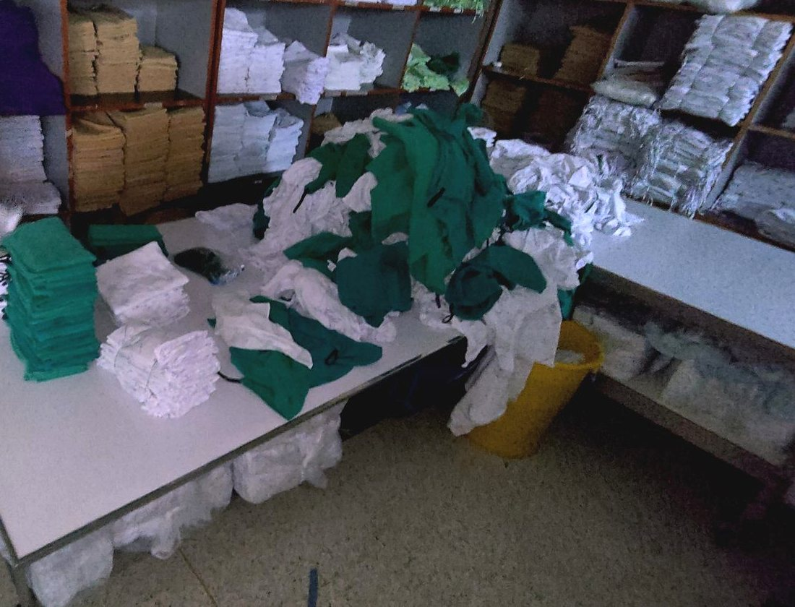
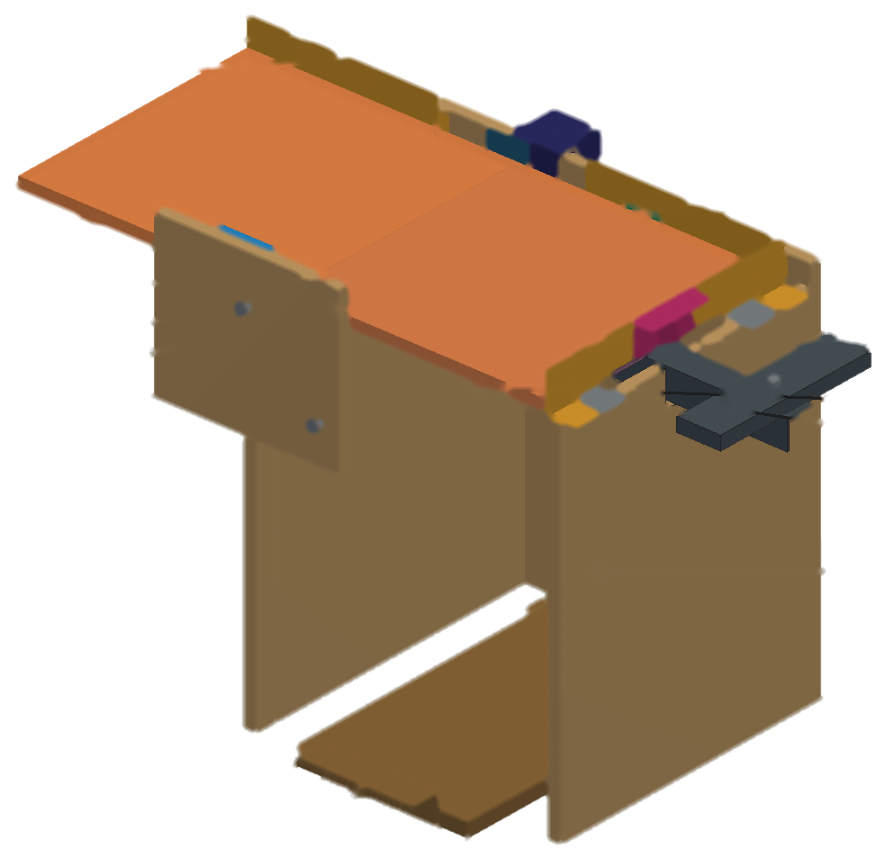
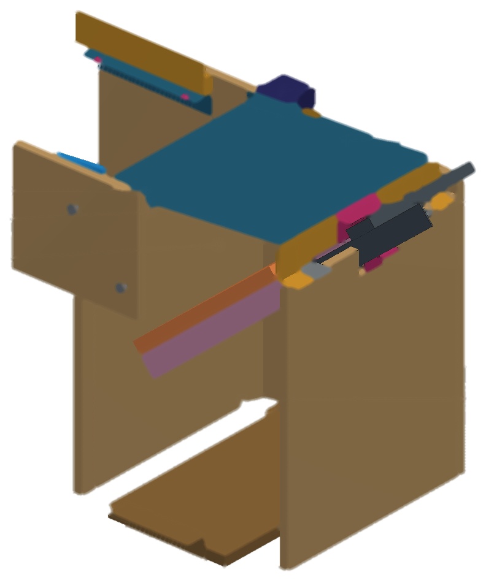
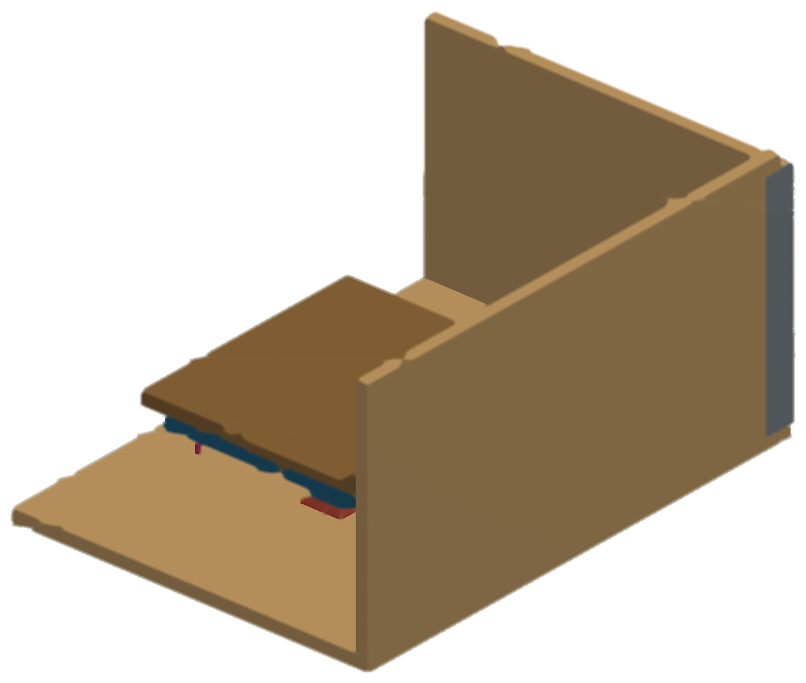
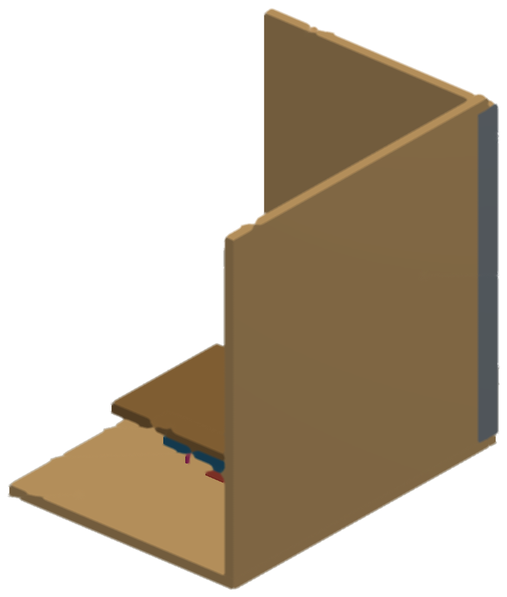
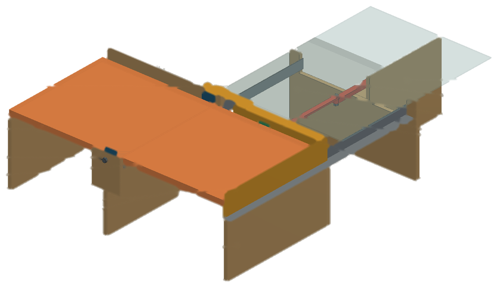
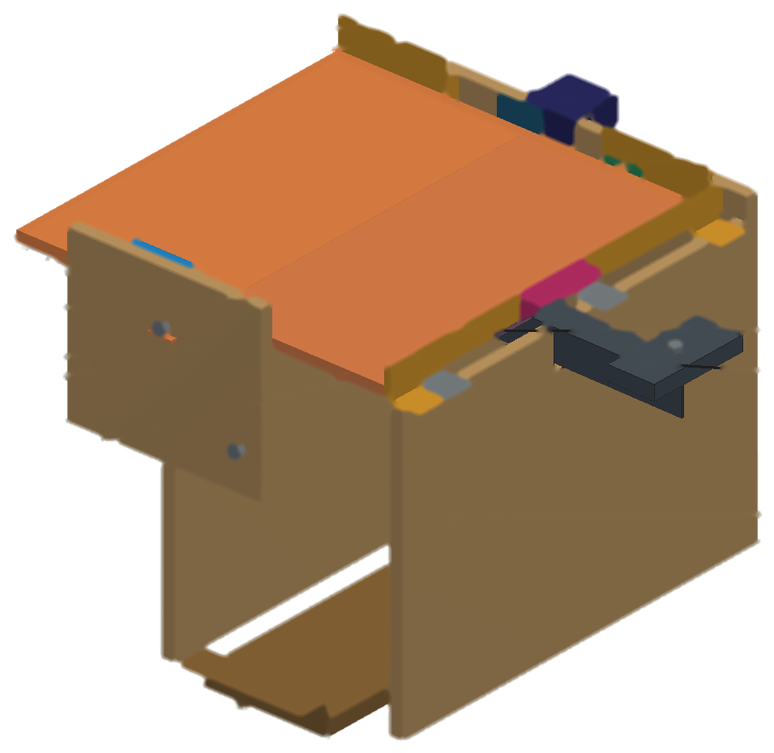
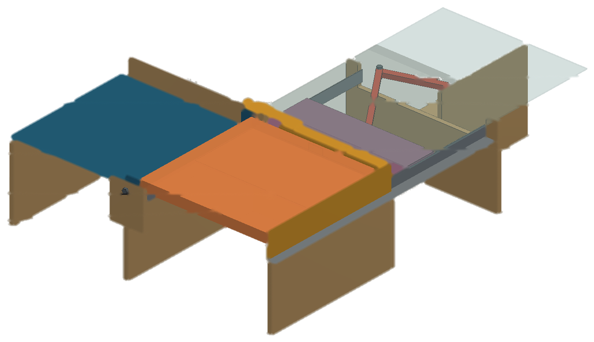
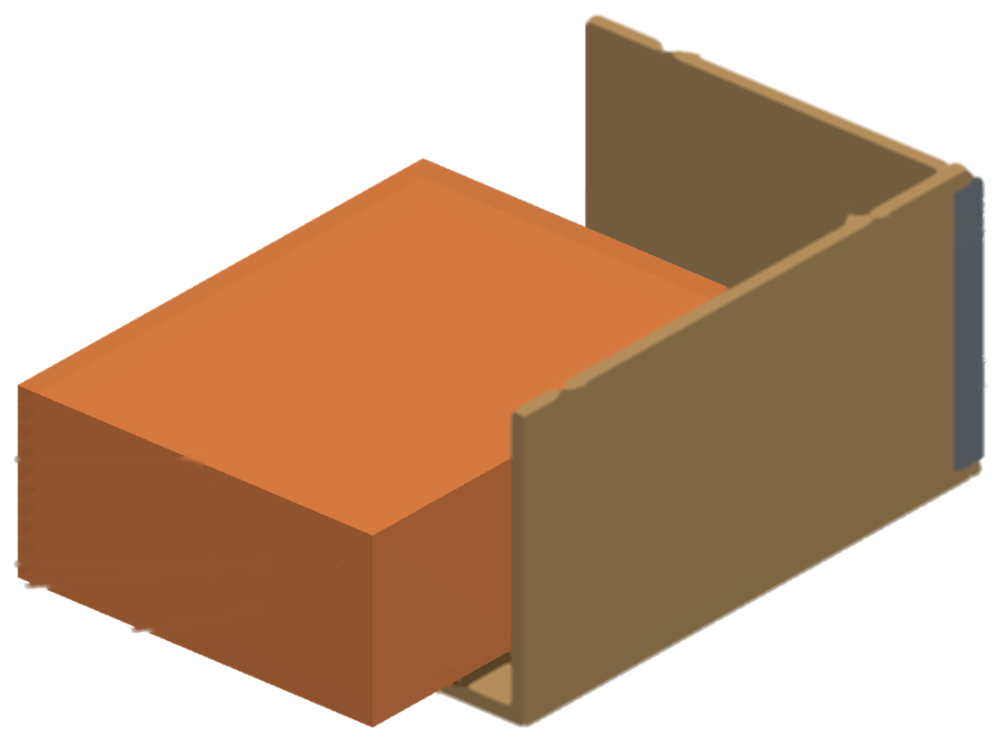
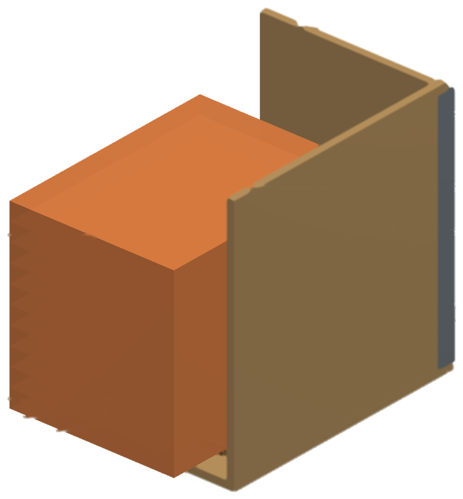

การนำเสนอความก้าวหน้าครั้งที่ 1 • โครงงาน MfE02/2026
การออกแบบและปรับปรุงกระบวนการพับผ้า
ในโรงพยาบาล : กรณีศึกษา
งานจ่ายผ้ากลาง โรงพยาบาลสงขลานครินทร์
ผู้ดำเนินโครงงาน
นายจารุเดช เพชรวิโรจน์ 6610110039
นายพีรพัฒน์ ภักดีอักษร 6610110216
นายวรากร ปิยวิสุทธิรักษ์ 6610110634
นายวุฒิพงศ์ สนอยู่ 6610110642
อาจารย์ที่ปรึกษาโครงงาน
รองศาสตราจารย์ วนิดา รัตนมณี
226-461 MANUFACTURING ENGINEERING PROJECT I • ภาคการศึกษาที่ 1 ปีการศึกษา 2569
หลักสูตรวิศวกรรมการผลิต สาขาวิชาวิศวกรรมอุตสาหการและการผลิต คณะวิศวกรรมศาสตร์ มหาวิทยาลัยสงขลานครินทร์
หลักสูตรวิศวกรรมการผลิต สาขาวิชาวิศวกรรมอุตสาหการและการผลิต คณะวิศวกรรมศาสตร์ มหาวิทยาลัยสงขลานครินทร์
15 ตุลาคม 2569
ความเป็นมาของปัญหา
กระบวนการพับมีผ้าค้างทุกวัน ณ เวลาปิดทำการ
รับ
ซัก
อบ
รีด
พับ (คอขวด)
จ่าย
ผ้าที่ซักภายในหน่วยงาน เฉลี่ย
7,836.10 กก./วัน
จ้างซักภายนอกอีกประมาณ 3,000 กก./วัน
•เครื่องอบ 16 เครื่อง ไม่มีผ้ารอเข้าอบ ผ้าจึงมารอที่กระบวนการพับ
•ขั้นตอนพับไม่มีการชั่งหรือนับผ้า จึงไม่มีข้อมูลเชิงปริมาณของกระบวนการ โครงงานจึงวัดด้วยน้ำหนักผ้าค้างพับ
•ผลกระทบ: ใช้พื้นที่วางผ้ารอพับ ผ้าสะอาดเสี่ยงปนเปื้อนซ้ำ และงานค้างสะสมไปวันถัดไป

ผ้ารอพับบนโต๊ะพับ งานจ่ายผ้ากลาง
โรงพยาบาลสงขลานครินทร์ 991 เตียง ผ้าหมุนเวียน 239 ชนิด
โรงพยาบาลสงขลานครินทร์ 991 เตียง ผ้าหมุนเวียน 239 ชนิด
MfE02/2026 • ความก้าวหน้าครั้งที่ 1
เป้าหมายของโครงงาน
วัตถุประสงค์ ขอบเขต และประโยชน์ที่คาดว่าจะได้รับ
วัตถุประสงค์
เพิ่มกำลังการผลิตของกระบวนการพับผ้า โดยลดปริมาณผ้าค้างพับ ณ เวลาปิดทำการ
ขอบเขต
•6 จาก 13 โซนการพับ ของงานจ่ายผ้ากลาง
•ผ้าชิ้นเดี่ยว 82 ชนิด เริ่มที่ ผ้ากลุ่ม A 17 ชนิด
•ไม่ลงทุนเครื่องจักรขนาดใหญ่ ไม่เพิ่มบุคลากร ไม่ขยายเวลาทำงาน
•วัดผลด้วยน้ำหนักผ้าค้างพับ 21 วันต่อเนื่อง ก่อนและหลังปรับปรุง ที่ระดับนัยสำคัญ 0.05
ประโยชน์ที่คาดว่าจะได้รับ
•มีวิธีวัดและค่าฐานเชิงปริมาณของกระบวนการพับ
•ลดพื้นที่วางผ้ารอพับและงานค้างสะสม
•ผ้าสะอาดรอพับสั้นลง ลดความเสี่ยงปนเปื้อนซ้ำ
•มีลำดับผ้าเป้าหมายตามน้ำหนักจากข้อมูล 8 เดือน
•ใช้ทรัพยากรเดิม พนักงานหมุนเวียนใช้ได้ทุกคน
MfE02/2026 • ความก้าวหน้าครั้งที่ 1
แผนการดำเนินงาน มิถุนายน 2569 ถึง มีนาคม 2570
งานถึงขั้นตอนที่ 6 ซึ่งเริ่มก่อนแผน 4 สัปดาห์
ขั้นตอน
มิ.ย. 69
ก.ค. 69
ส.ค. 69
ก.ย. 69
ต.ค. 69
พ.ย. 69
ธ.ค. 69
ม.ค. 70
ก.พ. 70
มี.ค. 70
สถานะ
1 ศึกษาสภาพปัจจุบันและกำหนดปัญหา
เสร็จ ตามแผน
2 ศึกษาเอกสารและทฤษฎีที่เกี่ยวข้อง
กำลังดำเนินการ
4 เก็บข้อมูลก่อนปรับปรุง
เสร็จ
5 วิเคราะห์ข้อมูลและกำหนดเป้าหมาย
กำลังดำเนินการ
7 ทดลองปรับปรุงในหน่วยงานจริง
ยังไม่ถึงกำหนด
8 เก็บข้อมูลหลังปรับปรุง
ยังไม่ถึงกำหนด
9 วิเคราะห์ผลและสรุปผลการดำเนินงาน
ยังไม่ถึงกำหนด
10 จัดทำรายงานและนำเสนอ
กำลังดำเนินการ
แผน
ผลการดำเนินงาน
ปัจจุบัน สัปดาห์ที่ 2 ของ ต.ค. 69
ส่งรายงาน 12 ต.ค. | สอบ 15 ต.ค. | ส่งฉบับแก้ไข 22 ต.ค. 2569
MfE02/2026 • ความก้าวหน้าครั้งที่ 1
ผลการดำเนินงาน ขั้นตอนที่ 3 คัดเลือกกลุ่มผ้าเป้าหมาย
ผ้ากลุ่ม A 17 ชนิด คิดเป็นร้อยละ 79.05 ของน้ำหนักผ้าในขอบเขต
ผ้าทั้งหมดของหน่วยงาน
239 ชนิด
1,336,772.50 กก. (ม.ค.–ส.ค. 2569)
กลุ่ม
จำนวนชนิด
น้ำหนัก 8 เดือน (กก.)
ร้อยละของน้ำหนัก
ชนิดที่เสถียร
B
20
70,803.34
15.80
18
C
45
23,039.19
5.14
37
รวม
82
448,015.00
100.00
72
สัดส่วนน้ำหนักของผ้าชิ้นเดี่ยว 82 ชนิด
A ร้อยละ 79.05
B 15.80
C
•เกณฑ์น้ำหนักสะสม: กลุ่ม A ไม่เกินร้อยละ 80 กลุ่ม B ไม่เกินร้อยละ 95 กลุ่ม C ส่วนที่เหลือ
•ผ้ากลุ่ม A ทั้ง 17 ชนิดอยู่ในกลุ่มเดิมครบทั้ง 8 เดือน จึงใช้เป็นกลุ่มผ้าเป้าหมาย
MfE02/2026 • ความก้าวหน้าครั้งที่ 1
ผลการดำเนินงาน ขั้นตอนที่ 4 และ 5 เก็บข้อมูลก่อนปรับปรุงและกำหนดเป้าหมาย
ผ้าค้างพับเฉลี่ย 1,008.90 กก./วัน เป้าหมายคือไม่เกิน 853.34 กก./วัน
น้ำหนักผ้าค้างพับ ณ เวลาปิดทำการ ของ 6 โซน 21 วันต่อเนื่อง (กก./วัน)
ค่าเฉลี่ย 1,008.90
เป้าหมาย 853.34
สูงสุด 1,388.3
ต่ำสุด 751.9
ศ
ส
อา
จ
อ
พ
พฤ
ศ
ส
อา
จ
อ
พ
พฤ
ศ
ส
อา
จ
อ
พ
พฤ
21 ส.ค. ถึง 10 ก.ย. 2569 | ค่ารายวันทั้ง 21 วัน
MfE02/2026 • ความก้าวหน้าครั้งที่ 1
ผลการดำเนินงาน ขั้นตอนที่ 4 และ 5 บันทึกและวิเคราะห์ขั้นตอนการพับ
เวลาพับทุกค่าเก็บจาก Two-Hand Process Chart ของผ้ากลุ่ม A
แหล่งที่มาของเวลา
ถ่ายคลิปการพับที่หน้างาน แล้วบันทึกมือซ้ายและมือขวาแยกกันพร้อมเวลาใน Two-Hand Process Chart ผ้าที่พับคนเดียว 15 ชนิด ส่วนผ้าผืนใหญ่ที่พับ 2 คน 2 ชนิดใช้ Flow Process Chart รวม 279 ชิ้น
เวลาพับผ้ากลุ่ม A รวม 1,600.5 นาที/วัน แยกตามลักษณะงาน
ก รอและทำซ้ำ
47.3 นาที/วัน (ร้อยละ 3.0)
ข ถือและจัดวางผ้า
679.9 (ร้อยละ 42.5)
ค พับจริง
474.9 (ร้อยละ 29.7)
ง หยิบและวาง
398.4 (ร้อยละ 24.9)
เป็น เวลาที่สังเกตได้ ยังไม่ใช่เวลามาตรฐาน
MfE02/2026 • ความก้าวหน้าครั้งที่ 1
ผลการดำเนินงาน ขั้นตอนที่ 6 ออกแบบวิธีการปรับปรุง: วิธีเลือกแนวทาง
แนวทางของผ้าแต่ละชนิดเลือกจากสัดส่วนเวลา ไม่ใช้แนวทางเดียวกับทุกชนิด
แบ่งเวลาของรอบการพับเป็น 4 กลุ่ม แล้วใช้ กฎจับคู่ ที่กำหนดไว้ก่อนวิเคราะห์ข้อมูล
A1ปรับวิธีด้วยหลักการ ECRS และมาตรฐานการทำงาน
ผ้าทุกชนิดเริ่มที่ A117 ชนิด
A2เพิ่มอุปกรณ์ช่วยพับ
เมื่อกลุ่ม ข ถือและจัดวาง มากที่สุด11 ชนิด
A3พิจารณาเครื่องพับขนาดเล็ก
เมื่อกลุ่ม ค พับจริง มากที่สุด และเป็นผ้าแผ่นเรียบที่พับซ้ำแบบเดิม3 ชนิด
กรณีอื่นใช้ A1 อย่างเดียว 3 ชนิด | A0 คือวิธีปัจจุบัน ใช้เป็นฐานเปรียบเทียบ
จัดผ้าเป็น 5 กลุ่มรูปแบบการพับ แล้วเรียงตามเวลาที่แนวทางนั้นลดได้สูงสุด เริ่มที่กลุ่มผ้าแผ่นสี่เหลี่ยมพับครึ่งซ้ำ 7 ชนิด (371.9 นาที/วัน)
ชนิดผ้า
กลุ่มมากที่สุด (ร้อยละ)
แนวทาง
ลดได้สูงสุด (นาที/วัน)
1
ผ้าอ้อมใหญ่ 36"x36"
ค 67.3
A1 + A3
122.5
2
ปลอกหมอนใหญ่สีขาว 18"x27"
ข 54.4
A1 + A2
69.8
3
ถุงใส่ผ้าเปื้อนโพลีเอสเตอร์
ข 47.1
A1 + A2
59.7
4
ผ้าเช็ดตัว 24"x48"
ค 46.6
A1 + A3
52.9
5
ผ้าเช็ดมือมีหู 36"
ค 45.9
A1 + A3
52.9
เวลาที่ลดได้สูงสุดใช้จัดลำดับงานเท่านั้น ไม่ใช่เวลาที่ลดได้จริง
กำหนดวิธี A1
แยก 5 ฟังก์ชัน เสนออย่างน้อย 3 ทางเลือก
ให้คะแนนตามเกณฑ์
ตรวจด่าน G และเงื่อนไข E
แบบจำลอง 3 มิติ
MfE02/2026 • ความก้าวหน้าครั้งที่ 1
ผลการดำเนินงาน ขั้นตอนที่ 6 ออกแบบวิธีการปรับปรุง: เกณฑ์รวมของทั้งโครงงาน
เกณฑ์ชุดเดียวใช้กับอุปกรณ์ช่วยพับและเครื่องพับทุกชิ้น
เงื่อนไขด้านเทคนิค 8 ข้อ และด้านเศรษฐศาสตร์ 1 ข้อ ใช้เป็นข้อกำหนดขณะออกแบบ
T1พื้นที่จัดวาง
ไม่เกิน 100 x 100 x 100 ซม. ต่อเครื่อง
T2น้ำหนักเครื่อง
ไม่เกิน 100 กก. ตามที่พื้นที่จัดวางรับได้
T3ขนาดผ้าและการนับ
ขนาดผ้า ขนาดที่พับเสร็จ และจำนวนชิ้นต่อเซต ตามที่วัดที่หน้างาน
T4เวลาต่อรอบ (cycle time)
รวมการป้อนผ้า น้อยกว่าเวลาพับปัจจุบันจาก Two-Hand Process Chart
T5ผิวที่สัมผัสผ้า
เรียบ ไม่เป็นสนิม และทำความสะอาดได้
T6แหล่งพลังงาน
ใช้เฉพาะที่มีอยู่ในพื้นที่จัดวาง
T7ผู้ใช้งาน
1 คนใช้ได้ และเจ้าหน้าที่หมุนเวียนใช้ได้ทุกคน
T8การใช้เท้า
ไม่มีชิ้นส่วนที่ต้องใช้เท้าเหยียบ
E1ต้นทุน
ไม่เกิน 2,000 บาทต่อเครื่อง และรวมทุกชิ้นไม่เกิน 10,000 บาท
เกณฑ์ให้คะแนน เลือกทางเลือกของแต่ละฟังก์ชัน
คะแนน 1 ถึง 5 คูณน้ำหนัก เต็ม 500 คะแนน
ความเร็ว
30
ต้นทุน
25
ความสะดวก
15
ขนาด
15
น้ำหนัก
15
ด่าน G1 ถึง G5 ตรวจแนวคิดรวมก่อนทำแบบจำลอง
ทรัพยากร | ความต่อเนื่องของบริการ | มาตรฐานและการป้องกันการติดเชื้อ | ผู้ปฏิบัติงาน | ขอบเขต
ถ้าไม่ผ่านด่านหรือเงื่อนไข E1 ต้องพัฒนาแนวคิดใหม่
MfE02/2026 • ความก้าวหน้าครั้งที่ 1
ตัวอย่าง 1 ชนิด: ผ้าลำดับที่ 1 ผ้าอ้อมใหญ่ 36"x36" (โซนผ้าขาว)
ตัวอย่าง: จากเวลาพับของผ้าอ้อมใหญ่ สู่แนวคิดรวมของเครื่องพับ
1เวลาพับปัจจุบัน
จาก Two-Hand Process Chart 18 ชิ้น
14.44 วินาที/ชิ้น
678.6 ชิ้น/วัน คิดเป็น 163.4 นาที/วัน
ค 67.3
ง 22.7
กลุ่ม ค การพับจริง มากที่สุด ร้อยละ 67.3 และเป็นผ้าแผ่นเรียบที่พับครึ่งซ้ำ 4 ครั้ง
แนวทาง A1 และ A3
2วิธี A1
ตัดขั้นกลับด้านผ้าก่อนทบสุดท้าย ซึ่งแบบบันทึกไม่ได้ระบุเหตุที่ต้องทำ
14.4414.04
วินาที/ชิ้น
คาดว่าลดได้ 4.5 นาที/วัน
ผู้ปฏิบัติงานยังพับเองครบ 4 ทบ ไม่มีอุปกรณ์เพิ่ม
3แนวคิดรวมของเครื่องพับ (A3)
ฟังก์ชัน
ทางเลือกที่ได้คะแนนสูงสุด
ทางเลือก
คะแนน
แนวคิดรอบที่ 1 เครื่องพับ 2 ทบ ต้นทุน 3,652 ถึง 5,056 บาท ไม่ผ่านเงื่อนไข E1 จึงพัฒนาแนวคิดใหม่เป็นรอบที่ 2
MfE02/2026 • ความก้าวหน้าครั้งที่ 1
Backup10
ตัวอย่าง 1 ชนิด (ต่อ): แบบจำลอง 3 มิติของเครื่องพับผ้าอ้อมใหญ่ 36"x36" เทียบกับเกณฑ์
คนพับ 3 ทบแรก เครื่องพับทบสุดท้าย ซ้อนกอง และนับ

1
2
3
4
5
6
8
9
พร้อมรับผ้า

2
7
8
แผ่นพับหมุน 175 องศา บานรับเปิด
1ผ้าหลังทบที่ 3
2แผ่นพับ
3ขอบกั้นด้านหลัง
4ขอบกั้นด้านขวา
5เซอร์โวมอเตอร์
6เซ็นเซอร์
7บานรับ
8ตุ้มถ่วง
9ถาดดึงออกได้
1ผู้ปฏิบัติงานพับ 3 ทบแรกตามวิธี A1 แล้ววางผ้าให้ชนขอบกั้น 2 ด้าน
2เซ็นเซอร์พบขอบผ้า เซอร์โวมอเตอร์หมุนแผ่นพับ พับทบสุดท้าย
3บานรับเปิด ผ้าไถลลงซ้อนบนถาด ตุ้มถ่วงดึงบานรับปิด
4บอร์ดควบคุมนับ เสียงเตือนเมื่อครบ 10 ชิ้น ดึงถาดออกมามัดยาง
พื้นที่จัดวาง (T1)
ไม่เกิน 100 x 100 x 100 ซม.
58.2 x 36.9 x 36.8 ซม.
ผ่าน
น้ำหนักเครื่อง (T2)
ไม่เกิน 100 กก.
4.25 กก.
ผ่าน
ขนาดผ้าและการนับ (T3)
ตามหน้างาน เซตละ 10 ชิ้น
ผ้าพับเสร็จ 22.86 x 22.86 ซม. เตือนทุก 10 ชิ้น
ตามแบบ
เวลาต่อรอบ (T4)
น้อยกว่า 14.44 วินาที/ชิ้น
10.34 ถึง 11.64 วินาที/ชิ้น
ผ่าน
เวลาที่คาดว่าลดได้ของผ้าชนิดนี้
31.6 ถึง 46.3 นาที/วัน
วิธี A1 4.5
เครื่องพับ 27.1 ถึง 41.8
เครื่องพับ 27.1 ถึง 41.8
ค่าทั้งหมดเป็นค่าของ แบบจำลอง 3 มิติ ยังไม่ได้วัดหรือทดสอบกับของจริง เวลาพับปัจจุบันจาก Two-Hand Process Chart
MfE02/2026 • ความก้าวหน้าครั้งที่ 1
Backup11
ผลการดำเนินงาน ขั้นตอนที่ 6: สรุปผ้า 5 ชนิดแรก เป็นอุปกรณ์ช่วยพับ 2 ชิ้น และเครื่องพับ 3 ชิ้น
ผ้า 5 ชนิดแรกถึงค่าอ้างอิงของเป้าหมายเฉพาะเมื่อได้ค่าสูงของช่วง
1 ผ้าอ้อมใหญ่ 36"x36"
เครื่องพับเกินงบต่อเครื่อง
ขนาด (ซม.)58.2 x 36.9 x 36.8
น้ำหนัก (กก.)4.25
ปัจจุบัน (วินาที/ชิ้น)14.44
ใช้อุปกรณ์หรือเครื่อง10.34–11.64
ต้นทุน (บาท)2,263–2,395
ลดได้ (นาที/วัน)31.6–46.3

2 ปลอกหมอนใหญ่สีขาว 18"x27"
อุปกรณ์ช่วยพับไม่เกินงบ
ขนาด (ซม.)30.1 x 46.4 x 21.3
น้ำหนัก (กก.)2.62
ปัจจุบัน (วินาที/ชิ้น)11.03
ใช้อุปกรณ์หรือเครื่อง8.84–9.54
ต้นทุน (บาท)1,122–1,260
ลดได้ (นาที/วัน)17.4–25.5

3 ถุงใส่ผ้าเปื้อนโพลีเอสเตอร์
อุปกรณ์ช่วยพับไม่เกินงบ
ขนาด (ซม.)26.1 x 40.4 x 35.3
น้ำหนัก (กก.)2.52
ปัจจุบัน (วินาที/ชิ้น)13.60
ใช้อุปกรณ์หรือเครื่อง11.41–12.11
ต้นทุน (บาท)1,058–1,196
ลดได้ (นาที/วัน)13.9–20.4

4 ผ้าเช็ดตัว 24"x48"
เครื่องพับเกินงบต่อเครื่อง
ขนาด (ซม.)63.8 x 88.8 x 21.1
น้ำหนัก (กก.)3.75
ปัจจุบัน (วินาที/ชิ้น)15.61
ใช้อุปกรณ์หรือเครื่อง10.50–11.80
ต้นทุน (บาท)2,192–2,362
ลดได้ (นาที/วัน)19.8–26.6

5 ผ้าเช็ดมือมีหู 36"
เครื่องพับเกินงบต่อเครื่อง
ขนาด (ซม.)43.6 x 41.6 x 28.8
น้ำหนัก (กก.)3.35
ปัจจุบัน (วินาที/ชิ้น)12.33
ใช้อุปกรณ์หรือเครื่อง4.60–8.40
ต้นทุน (บาท)2,009–2,141
ลดได้ (นาที/วัน)27.2–53.4
109.8
172.2
ค่าอ้างอิง 156.2
0
ร้อยละ 70.3 ถึง 110.3 ของค่าอ้างอิง
ต้นทุนรวม 8,644–9,354 บาท ไม่เกินงบรวม 10,000
ทุกชิ้นผ่านเกณฑ์ พื้นที่จัดวาง น้ำหนัก และเวลาต่อรอบ
ด่าน G2 ถึง G4 ต้องยืนยันด้วยการทดลอง
MfE02/2026 • ความก้าวหน้าครั้งที่ 1
Backup12
สรุปความก้าวหน้า ถึงสัปดาห์ที่ 2 ของเดือนตุลาคม 2569
ได้ค่าฐาน เป้าหมาย เกณฑ์ และแบบจำลอง 3 มิติของผ้า 5 ชนิดแรก
ขั้นตอน
ผลที่ได้
สถานะ
1 ศึกษาสภาพปัจจุบัน
กระบวนการพับเป็นคอขวด กำหนดขอบเขต 6 จาก 13 โซนการพับ
เสร็จ
3 คัดเลือกกลุ่มผ้าเป้าหมาย
ผ้ากลุ่ม A 17 ชนิด ร้อยละ 79.05 ของน้ำหนักผ้าในขอบเขต
เสร็จ
4 เก็บข้อมูลก่อนปรับปรุง
ผ้าค้างพับ 21 วัน เฉลี่ย 1,008.90 กก./วัน และ Two-Hand Process Chart ครบ 17 ชนิด
เสร็จ
5 วิเคราะห์ข้อมูลและกำหนดเป้าหมาย
ลดผ้าค้างพับไม่น้อยกว่า 155.56 กก./วัน เทียบเท่าเวลาพับ 156.2 นาที/วัน
กำลังดำเนินการ
6 ออกแบบวิธีการปรับปรุง
เกณฑ์รวม แนวทางรายชนิดผ้า และแบบจำลอง 3 มิติ 5 ชิ้น คาดว่าลดได้ 109.8 ถึง 172.2 นาที/วัน
เริ่มก่อนแผน
งานช่วงถัดไป
1แก้แบบตามจุดที่แบบจำลอง 3 มิติพบ และตัดสินเรื่องงบต่อเครื่อง
2เก็บข้อมูลหน้างานที่ยังขาดของผ้า 2 ชนิด
3ออกแบบผ้าลำดับถัดไป เพื่อให้ถึงค่าอ้างอิงของเป้าหมาย
4ขอความเห็นชอบจากหัวหน้างานจ่ายผ้ากลาง สร้างและทดสอบต้นแบบ แล้วเก็บข้อมูลหลังปรับปรุง 21 วัน
MfE02/2026 • ความก้าวหน้าครั้งที่ 1
Backup13
ปัญหา อุปสรรค และแนวทางแก้ไข
ปัญหาเรื่องงบประมาณ และแนวทางแก้ไข
ปัญหาและอุปสรรค
แนวทางแก้ไข
2
แบบจำลอง 3 มิติแสดงว่าเครื่องพับ 3 ชิ้นเกินงบต่อเครื่อง 2,000 บาท
ต้นทุนรวมไม่เกินงบ 10,000 บาท ยังไม่ได้ตัดสินระหว่างใช้แบบนี้ต่อกับพัฒนาแนวคิดใหม่
MfE02/2026 • ความก้าวหน้าครั้งที่ 1
Backup14
MfE02/2026 ความก้าวหน้าครั้งที่ 1
Backup
หน้าที่นำเสนอ
หน้าที่นำเสนอ (ต่อ)
เอกสารที่ส่งพร้อมการสอบ
16
รายงานความก้าวหน้าหัวข้อในรายงานที่อาจถูกถาม
17
ใบตอบคำถาม SOคำตอบ SO2 และ SO7 รายข้อ
18
ใบสรุปโครงงานหัวข้อทั้ง 7 ของใบสรุปโครงงาน
กดหัวข้อเพื่อไปยังหน้านั้น
15
Backup | เอกสารที่ส่งพร้อมการสอบ
รายงานความก้าวหน้า: หัวข้อที่อาจถูกถาม
รายงานฉบับส่ง 12 ตุลาคม 2569 บทที่ 1 ถึง 5
1
ทำไมวัดผลด้วยน้ำหนักผ้าค้างพับ ไม่นับจำนวนชิ้นหัวข้อ 3.1.2 และ 3.2.2
2
ทำไมศึกษา 6 จาก 13 โซนการพับหัวข้อ 1.3.1 และตารางที่ 3.2
3
เครื่องพับขัดกับข้อจำกัดไม่ลงทุนเครื่องจักรขนาดใหญ่หรือไม่หัวข้อ 1.3.1 และ 1.3.7
4
เป้าหมาย 155.56 กก./วัน มาจากไหนหัวข้อ 2.2.7 และ 4.3.2
5
ผ้าค้างพับต่างกันตามวันในสัปดาห์หรือไม่หัวข้อ 3.2.3
6
ผ้ากลุ่ม A 17 ชนิดคัดเลือกอย่างไรหัวข้อ 3.2.4
7
เวลาพับเป็นเวลามาตรฐานหรือไม่หัวข้อ 4.2.2
8
แปลงเป้าหมายจากกิโลกรัมเป็นนาทีอย่างไรหัวข้อ 4.3.5
9
แนวทาง A1 A2 A3 ของผ้าแต่ละชนิดเลือกอย่างไรหัวข้อ 4.4.1 และ 4.4.2
10
ทางเลือกของแต่ละฟังก์ชันให้คะแนนอย่างไรหัวข้อ 4.4.5
11
ทำไมเครื่องพับ 3 ชิ้นเกินงบต่อเครื่องหัวข้อ 4.5.5
12
ผ้า 5 ชนิดแรกถึงเป้าหมายหรือไม่หัวข้อ 4.5.6
13
แบบจำลอง 3 มิติพบจุดใดที่ต้องแก้ก่อนสร้างหัวข้อ 4.5.7
14
16
ทฤษฎีที่ใช้ และใช้ในขั้นใดของโครงงานหัวข้อ 2.2
กดหัวข้อเพื่อดูคำอธิบาย
Backup16
Backup | เอกสารที่ส่งพร้อมการสอบ
ใบตอบคำถาม SO: หัวข้อที่อาจถูกถาม
SO2 และ SO7 อย่างละ 3 ข้อ ส่วน SO3 พิจารณาจากรายงาน สไลด์ และการนำเสนอ
1
SO2 PI1 วัตถุประสงค์และเงื่อนไขเชื่อมโยงกับผู้มีส่วนได้ส่วนเสียอย่างไรตารางที่ 1 ของใบตอบคำถาม SO
2
SO2 PI2 ทางเลือกมีอะไรบ้าง และคัดเลือกอย่างไรตารางที่ 2 และ 3
4
คะแนนของทางเลือกทุกทางของเครื่องพับผ้าอ้อมใหญ่ที่มาของตารางที่ 2
5
ทำไมขนาดในใบตอบคำถาม SO ต่างจากรายงานตารางที่ 4 เทียบกับตารางที่ 4.19 ของรายงาน
6
SO7 PI1 ความรู้และทักษะที่ยังขาดคืออะไรตารางที่ 5
8
SO7 PI3 นำความรู้ใหม่ไปใช้แก้ปัญหาอย่างไรคำตอบ 6 ข้อ
9
ค่าจากแบบจำลอง 3 มิติของอุปกรณ์และเครื่อง 5 ชิ้นที่มาของตารางที่ 4
10
ร้อยละ 70.3 ถึง 110.3 ของ 156.2 นาที/วัน มาจากไหนคำตอบ SO2 PI3
กดหัวข้อเพื่อดูคำอธิบาย
Backup17
Backup | เอกสารที่ส่งพร้อมการสอบ
ใบสรุปโครงงาน: หัวข้อที่อาจถูกถาม
Project Executive Summary 7 หัวข้อ
2
3
5
Engineering Aspect 3 ประเด็นหัวข้อที่ 5
6
Specifications/Constraints 3 เงื่อนไขหัวข้อที่ 5
7
Key Relevant Courses 3 รายวิชาหัวข้อที่ 5
8
Analysis และ Design Idea: เครื่องมือและกระบวนการออกแบบ 6 ขั้นหัวข้อที่ 6 และ 7
กดหัวข้อเพื่อดูคำอธิบาย
Backup18
Backup | ข้อมูลประกอบหน้า 3 และ 6
ที่มาของเป้าหมาย 155.56 กก./วัน
ใช้ผลต่างที่น้อยที่สุดที่ตรวจพบได้ (MDI) เป็นขนาดขั้นต่ำของการลดผ้าค้างพับ เพื่อให้แยกผลของการปรับปรุงออกจากความแปรปรวนรายวันได้
MDI = (Z1 + Z2) x SD x รากที่สองของ (2 / n)
= (1.6449 + 0.8416) x 202.73 x รากที่สองของ (2 / 21)
= 2.4865 x 202.73 x 0.3086
= 155.56 กก./วัน
•คิดเป็นร้อยละ 15.42 ของค่าเฉลี่ยก่อนปรับปรุง 1,008.90 กก./วัน
•ค่าเฉลี่ยหลังปรับปรุงต้องไม่เกิน 1,008.90 - 155.56 = 853.34 กก./วัน
•ผลรวมของค่า Z ปัดเป็น 2.49 ในรายงาน อ้างอิง Bloom (1995)
ระดับนัยสำคัญ 0.05 ด้านเดียว
สนใจเฉพาะการลดลงของผ้าค้างพับ ทิศทางกำหนดไว้ล่วงหน้า (Z1 = 1.6449)
อำนาจการทดสอบ ร้อยละ 80
เกณฑ์มาตรฐานของการออกแบบการทดลอง (Z2 = 0.8416)
SD = 202.73 กก./วัน
ส่วนเบี่ยงเบนมาตรฐานของผ้าค้างพับรายวันทุกโซน ในช่วงเวลาเดียวกัน
n = 21 วันต่อช่วง
เท่ากับจำนวนวันที่เก็บข้อมูลก่อนปรับปรุง
ถ้าใช้ SD ของ 6 โซนในขอบเขต (208.27 กก./วัน) จะได้ 159.82 กก./วัน หรือร้อยละ 15.84 ซึ่งใกล้เคียงกัน
Backup | ข้อมูลประกอบหน้า 2, 3 และ 6
ที่มาของ 1,008.90 และ 853.34 กก./วัน
น้ำหนักผ้าค้างพับ ณ เวลาปิดทำการ รวม 6 โซนในขอบเขต (กก./วัน)
วัน
21–27 ส.ค.
28 ส.ค.–3 ก.ย.
4–10 ก.ย.
เฉลี่ยของวัน
ศุกร์
780.0
1,388.3
1,292.3
1,153.53
เสาร์
1,096.5
1,102.1
969.2
1,055.93
อาทิตย์
1,051.0
800.2
847.2
899.47
จันทร์
770.9
1,014.0
911.3
898.73
อังคาร
901.8
1,080.1
897.9
959.93
พุธ
800.3
1,236.8
832.2
956.43
พฤหัสบดี
1,384.8
1,278.0
751.9
1,138.23
21 ส.ค. ถึง 10 ก.ย. 2569 ชั่งรวมตามโซน ใช้ 443 รายการชั่ง
ค่าเฉลี่ย1,008.90
ส่วนเบี่ยงเบนมาตรฐาน208.27
ต่ำสุด และ สูงสุด751.9 และ 1,388.3
สัมประสิทธิ์การแปรผันร้อยละ 20.64
รวม 21 วัน21,186.8 กก.
Backup | ข้อมูลประกอบหน้า 6
ที่มาของ F = 0.73 และ p = 0.6314
การวิเคราะห์ความแปรปรวนแบบทางเดียว เปรียบเทียบผ้าค้างพับของ 7 วันในสัปดาห์ วันละ 3 ค่า (F = MST / MSE)
แหล่งความแปรปรวน
SS
df
MS
F
p
ระหว่างวันในสัปดาห์
207,362.64
6
34,560.44
0.73
0.6314
ภายในวันเดียวกัน
660,200.07
14
47,157.15
รวม
867,562.71
20
ค่าเฉลี่ยของแต่ละวัน และส่วนเบี่ยงเบนมาตรฐานในวงเล็บ (กก./วัน)
จันทร์
898.73
(122.04)
อังคาร
959.93
(104.09)
พุธ
956.43
(243.33)
พฤหัสบดี
1,138.23
(338.81)
ศุกร์
1,153.53
(327.03)
เสาร์
1,055.93
(75.17)
อาทิตย์
899.47
(133.32)
•F = 0.73 น้อยกว่าค่าวิกฤต 2.85 ที่ระดับนัยสำคัญ 0.05 จึงไม่ปฏิเสธสมมติฐานว่าค่าเฉลี่ยของทั้ง 7 วันเท่ากัน
Backup | ข้อมูลประกอบหน้า 2 และ 3
ที่มาของขอบเขต 6 จาก 13 โซนการพับ
ในขอบเขต 6 โซน
โซนผ้าขาว
โซนเสื้อกาวน์
โซนผ้าสี่เหลี่ยมสีเขียว
โซนผ้าขนหนู
โซนผ้านอกรายการ
โซนเจ้าหน้าที่
นอกขอบเขต 7 โซน
โซนผ้าห่ม โซนผ้าขวาง โซนผ้าปู
ใช้เครื่องจักรขนาดใหญ่
โซนผ้าปลอดเชื้อ
เป็นห้องปลอดเชื้อ หน่วยงานไม่ให้เข้าไปดำเนินการ
โซนผ้าพิเศษ โซนผ้ายาง โซนผ้าพันแผล
ไม่มีผ้าค้างพับให้เก็บข้อมูล
จุดแยกผ้าเป็นจุดคัดแยกผ้า ไม่นับเป็นโซนการพับ
Backup | ข้อมูลประกอบหน้า 5
ที่มาของ 82 ชนิด และร้อยละ 79.05
กลุ่มผ้า (ข้อมูลการเบิก ม.ค.–ส.ค. 2569)
จำนวนชนิด
น้ำหนัก 8 เดือน (กก.)
ร้อยละของน้ำหนัก
ผ้าชิ้นเดี่ยวในโซนที่อยู่ในขอบเขต
82
448,015.00
33.51
ผ้าชิ้นเดี่ยวในโซนที่อยู่นอกขอบเขต
85
802,326.42
60.02
ผ้าที่จัดเป็นชุดหรือมัด
72
86,431.08
6.47
รวม
239
1,336,772.50
100.00
ขั้นตอนการคัดเลือก
1แยกผ้าชิ้นเดี่ยว 167 ชนิด ออกจากผ้าที่จัดเป็นชุดหรือมัด 72 ชนิด
2เลือกผ้าชิ้นเดี่ยวที่พับใน 6 โซนในขอบเขต ได้ 82 ชนิด
3เรียงน้ำหนักจากมากไปน้อย กลุ่ม A สะสมไม่เกินร้อยละ 80 กลุ่ม B ไม่เกินร้อยละ 95
4วิเคราะห์ซ้ำรายเดือน ชนิดที่อยู่กลุ่มเดิมทุกเดือนถือว่าเสถียร
สัดส่วนน้ำหนักของผ้ากลุ่ม A
354,172.47 / 448,015.00 = ร้อยละ 79.05
จำนวนชนิดที่เสถียร
A 17 จาก 17 | B 18 จาก 20 | C 37 จาก 45
รวม 72 จาก 82 ชนิด คิดเป็นร้อยละ 87.80
Backup | ข้อมูลประกอบหน้า 3 และ 5
ผ้ากลุ่ม A 17 ชนิด เรียงตามน้ำหนักจากข้อมูล 8 เดือน
ชนิดผ้า
โซนการพับ
น้ำหนัก (กก.)
1
เสื้อกาวน์แขนยาวสีขาว
เสื้อกาวน์
66,398.33
2
ถุงใส่ผ้าเปื้อนโพลีเอสเตอร์
ผ้าขาว
58,815.90
3
ปลอกหมอนใหญ่สีขาว 18"x27"
ผ้าขาว
21,216.13
4
ผ้าอ้อมใหญ่ 36"x36"
ผ้าขาว
20,611.88
5
ผ้าสี่เหลี่ยม 2 ชั้นสีเขียว 45"x45"
ผ้าสี่เหลี่ยมสีเขียว
20,098.40
6
ผ้าเช็ดตัว 24"x48"
ผ้าขนหนู
20,005.78
7
ชุดกิโมโนผู้ป่วยสีเขียว
ผ้านอกรายการ
19,824.00
8
เสื้อคนไข้
ผ้าขาว
18,947.72
9
เสื้อผู้ป่วยอาการหนัก
ผ้าขาว
18,565.36
ชนิดผ้า
โซนการพับ
น้ำหนัก (กก.)
10
ผ้าเช็ดตัวสีขาว 12"x12"
ผ้าขนหนู
15,913.19
11
ผ้าสี่เหลี่ยม 2 ชั้นสีเขียว 36"x36"
ผ้าสี่เหลี่ยมสีเขียว
13,950.50
12
กางเกงแพทย์ชายสีเขียว L
เจ้าหน้าที่
11,890.00
13
เสื้อเจ้าหน้าที่สีฟ้า XL
เจ้าหน้าที่
10,929.00
14
เสื้อกาวน์แขนสั้นสีขาว
เสื้อกาวน์
10,641.68
15
ผ้าเช็ดมือมีหู 36"
ผ้าขาว
10,063.70
16
เสื้อกาวน์ปลายแขนยืดสีเขียว
เสื้อกาวน์
8,918.40
17
ผ้าปูเตียง Treatment สีขาว
เสื้อกาวน์
7,382.50
รวม 17 ชนิด
354,172.47
ข้อมูลน้ำหนักผ้า ม.ค.–ส.ค. 2569 | ตัวอักษรสีเขียว คือผ้า 5 ชนิดแรกที่ออกแบบอุปกรณ์ช่วยพับและเครื่องพับ | ผ้ากลุ่ม A กระจายครบทั้ง 6 โซนในขอบเขต
Backup | ข้อมูลประกอบหน้า 4
ผลการดำเนินงานเทียบกับแผนรายขั้นตอน
ขั้นตอน
แผน
ผลการดำเนินงาน
หมายเหตุ
1 ศึกษาสภาพปัจจุบันและกำหนดปัญหา
มิ.ย./1 – ส.ค./4
มิ.ย./1 – ส.ค./4
เสร็จ ตามแผน
2 ศึกษาเอกสารและทฤษฎีที่เกี่ยวข้อง
มิ.ย./1 – ก.ย./4
มิ.ย./1 – ต.ค./2
กำลังดำเนินการ
3 คัดเลือกกลุ่มผ้าเป้าหมาย
ส.ค./3 – ก.ย./2
ส.ค./3 – ต.ค./1
เสร็จ ใช้เวลามากกว่าแผน เพราะปรับขอบเขตของโซนการพับ และคำนวณการจัดกลุ่มผ้าใหม่
4 เก็บข้อมูลก่อนปรับปรุง
ส.ค./3 – ต.ค./1
ส.ค./3 – ต.ค./2
เสร็จ
5 วิเคราะห์ข้อมูลและกำหนดเป้าหมาย
ก.ย./1 – ต.ค./4
ก.ย./3 – ต.ค./2
กำลังดำเนินการ อยู่ในช่วงของแผน
6 ออกแบบวิธีการปรับปรุง
พ.ย./1 – พ.ย./4
ต.ค./1 – ต.ค./2
เริ่มเร็วกว่าแผน 4 สัปดาห์ เพราะบันทึกการพับของผ้ากลุ่ม A ครบ 17 ชนิดแล้ว
7 ถึง 9 ทดลอง เก็บข้อมูล และสรุปผล
ธ.ค./1 – มี.ค./4
ยังไม่ได้ดำเนินการ
ยังไม่ถึงกำหนดเริ่ม
10 จัดทำรายงานและนำเสนอ
มิ.ย./1 – มี.ค./4
มิ.ย./1 – ต.ค./2
กำลังดำเนินการ
ส.ค./3 หมายถึงสัปดาห์ที่ 3 ของเดือนสิงหาคม 2569 | ข้อมูลถึงสัปดาห์ที่ 2 ของเดือนตุลาคม 2569 | กำหนดการของภาคการศึกษาที่ 2 อยู่ระหว่างรอประกาศจากหลักสูตร
Backup25
Backup | ข้อมูลประกอบหน้า 7
วิธีบันทึกการพับและการจัดกลุ่มเวลา
•ถ่ายคลิปวิดีโอการพับที่หน้างาน แล้วดูย้อนหลังเพื่อกรอกแบบบันทึก จึงไม่รบกวนการปฏิบัติงานและดูซ้ำได้
•Two-Hand Process Chart: ผ้า 15 ชนิดที่พับคนเดียว บันทึกมือซ้ายและมือขวาแยกกันพร้อมเวลาของแต่ละแถว ได้ผ้าที่พับจบรอบ 260 ชิ้น
•Flow Process Chart: ผ้าสี่เหลี่ยม 2 ชั้นสีเขียว 2 ชนิด เป็นผ้าผืนใหญ่ที่พับ 2 คน ได้ผ้าที่ปู 19 ผืน
•รอบการพับนับตั้งแต่หยิบผ้า จนถึงวางผ้าบนกองผ้าที่พับแล้ว
•ภาระงานต่อวัน คือจำนวนชิ้นต่อวันจากข้อมูล 8 เดือน คูณเวลาเฉลี่ยต่อชิ้น
•เป็นเวลาที่สังเกตได้ ยังไม่ปรับอัตราการทำงานและยังไม่รวมค่าเผื่อ
เวลาของทุกแถวในรอบการพับจัดเป็น 4 กลุ่ม จากสัญลักษณ์ในแบบบันทึกร่วมกับคำบรรยายของแต่ละมือ
กลุ่ม
องค์ประกอบ
กิจกรรมที่จัดเข้ากลุ่ม
ก
การรอและขั้นที่ทำซ้ำ
มือที่ว่างหรือรอ และการพับแบบหนึ่งแล้วเปลี่ยนเป็นอีกแบบ
ข
การถือและการจัดวาง
มือที่ถือหรือจับผ้าค้างไว้ และการจัด คลี่ สะบัด พลิก กลับด้าน จับมุม หรือกดผ้าให้เรียบ
ค
การพับจริง
การพับ การทบ และการประกบผ้า
ง
การหยิบและการวาง
การหยิบผ้าจากกอง การวางผ้าบนโต๊ะ และการนำผ้าที่พับแล้วไปวางที่กอง
ดูเวลาและภาระงานรายชนิดผ้าที่ เวลาพับรายชนิดผ้า
Backup | ข้อมูลประกอบหน้า 7 และ 10
ที่มาของเวลาพับผ้ากลุ่ม A 1,600.5 นาที/วัน
ชนิดผ้า
ชิ้นที่บันทึก
วินาที/ชิ้น
ชิ้น/วัน
นาที/วัน
เสื้อกาวน์สีขาว แขนยาวและแขนสั้น
11
27.82
979.0
453.9
เสื้อผู้ป่วยอาการหนัก และเสื้อคนไข้
16
15.75
701.7
184.2
ผ้าอ้อมใหญ่ 36"x36"
18
14.44
678.6
163.4
ปลอกหมอนใหญ่สีขาว 18"x27"
10
11.03
698.5
128.4
ถุงใส่ผ้าเปื้อนโพลีเอสเตอร์
22
13.60
558.6
126.6
ผ้าเช็ดตัวสีขาว 12"x12"
90
3.02
2,030.1
102.3
ชุดกิโมโนผู้ป่วยสีเขียว
11
24.73
244.7
100.9
ผ้าเช็ดมือมีหู 36"
3
12.33
414.1
85.1
ชนิดผ้า
ชิ้นที่บันทึก
วินาที/ชิ้น
ชิ้น/วัน
นาที/วัน
ผ้าเช็ดตัว 24"x48"
18
15.61
312.4
81.3
กางเกงแพทย์ชายสีเขียว L
22
10.32
244.7
42.1
เสื้อกาวน์ปลายแขนยืดสีเขียว
10
27.04
91.8
41.4
ผ้าปูเตียง Treatment สีขาว
9
33.72
60.8
34.1
ผ้าสี่เหลี่ยม 2 ชั้นสีเขียว 45"x45"
9
7.91
206.8
27.3
ผ้าสี่เหลี่ยม 2 ชั้นสีเขียว 36"x36"
10
5.38
229.6
20.6
เสื้อเจ้าหน้าที่สีฟ้า XL
20
12.25
45.0
9.2
รวมผ้ากลุ่ม A
279
1,600.5
นาที/วัน = วินาที/ชิ้น x ชิ้น/วัน / 60 คำนวณจากค่าก่อนปัดเศษ | ชิ้น/วัน จากข้อมูล 8 เดือน | สีเขียว คือผ้า 5 ชนิดแรกที่ออกแบบ | เวลาจาก Two-Hand Process Chart และ Flow Process Chart
Backup | ข้อมูลประกอบหน้า 7
ที่มาของ 0.996 กก. ต่อนาที และ 156.2 นาที/วัน
ผ้าค้างพับชั่งรวมตามโซน ไม่แยกชนิดผ้า จึงใช้อัตรากลางของผ้ากลุ่ม A แปลงเป้าหมายจากน้ำหนักเป็นเวลาพับ
1
น้ำหนักผ้ากลุ่ม A ที่พับต่อวัน คือผลรวมของ ชิ้น/วัน x น้ำหนักต่อชิ้นที่ชั่งจริง ครบ 17 ชนิด
1,594.35 กก./วัน
3
อัตรากลาง คือ 1,594.35 / 1,600.5
0.996 กก. ต่อนาที
156.2 นาที/วัน คิดเป็นร้อยละ 9.8 ของเวลาพับผ้ากลุ่ม A | น้ำหนักต่อชิ้นได้จากการชั่งผ้าชนิดละ 10 ชิ้น
สมมติฐานของการแปลง
•เวลาที่ลดได้ถูกนำไปพับผ้าที่ค้างอยู่
•ผ้าที่ค้างพับได้เร็วเท่าค่าเฉลี่ยของผ้ากลุ่ม A
ขอบเขตของการใช้ค่า
•ใช้เป็นค่าอ้างอิงสำหรับเลือกและจัดลำดับการออกแบบเท่านั้น
•การตัดสินว่าบรรลุวัตถุประสงค์ ใช้น้ำหนักผ้าค้างพับที่ชั่งจริง 21 วัน
Backup | ข้อมูลประกอบหน้า 8
สัดส่วนเวลา 4 กลุ่ม และแนวทางของผ้าแต่ละชนิด
ชนิดผ้า
ก
ข
ค
ง
มากที่สุด
แนวทาง
เสื้อกาวน์สีขาว แขนยาวและแขนสั้น
1.6
68.6
15.4
14.4
ข
A1 + A2
เสื้อผู้ป่วยอาการหนัก และเสื้อคนไข้
0.6
37.5
30.0
31.9
ข
A1 + A2
ผ้าอ้อมใหญ่ 36"x36"
2.3
7.7
67.3
22.7
ค
A1 + A3
ปลอกหมอนใหญ่สีขาว 18"x27"
6.0
54.4
18.4
21.3
ข
A1 + A2
ถุงใส่ผ้าเปื้อนโพลีเอสเตอร์
6.5
47.1
26.6
19.7
ข
A1 + A2
ผ้าเช็ดตัวสีขาว 12"x12"
16.2
0.2
34.2
49.4
ง
A1
ชุดกิโมโนผู้ป่วยสีเขียว
1.7
47.2
29.8
21.3
ข
A1 + A2
ผ้าเช็ดมือมีหู 36"
0.0
16.2
45.9
37.8
ค
A1 + A3
ผ้าเช็ดตัว 24"x48"
0.7
18.5
46.6
34.2
ค
A1 + A3
กางเกงแพทย์ชายสีเขียว L
0.0
41.9
19.4
38.8
ข
A1 + A2
เสื้อกาวน์ปลายแขนยืดสีเขียว
0.9
69.6
17.0
12.6
ข
A1 + A2
ผ้าปูเตียง Treatment สีขาว
0.0
41.4
39.9
18.7
ข
A1 + A2
ผ้าสี่เหลี่ยม 2 ชั้นสีเขียว 45"x45"
0.0
30.4
23.5
46.2
ง
A1
ผ้าสี่เหลี่ยม 2 ชั้นสีเขียว 36"x36"
0.0
31.7
14.0
54.3
ง
A1
เสื้อเจ้าหน้าที่สีฟ้า XL
0.0
58.0
28.6
13.5
ข
A1 + A2
ร้อยละของเวลาในรอบการพับ จาก Two-Hand Process Chart | สีเขียว คือผ้า 5 ชนิดแรกที่ออกแบบ
กฎจับคู่ กำหนดไว้ก่อนวิเคราะห์ผลการบันทึกการพับ เพื่อให้ทุกทางเลือกถูกตัดสินด้วยเกณฑ์ชุดเดียวกัน
กลุ่มของเวลาที่มากที่สุด
แนวทาง
ผล
กลุ่ม ข การถือและการจัดวาง
A1 และเพิ่ม A2
11 ชนิด
กลุ่ม ค การพับจริง และเป็นผ้าแผ่นเรียบที่พับซ้ำแบบเดิม
A1 และพิจารณา A3
3 ชนิด
กรณีอื่น
A1 อย่างเดียว
3 ชนิด
•อุปกรณ์ช่วยพับกำหนดตำแหน่งและขนาดของการพับให้คงที่ จึงลดเวลาของการจัดวางและการกะระยะในกลุ่ม ข
•เครื่องพับทำงานแทนมือในขั้นการพับในกลุ่ม ค จึงเหมาะกับผ้าแผ่นเรียบที่พับซ้ำแบบเดิมทุกชิ้น
•ผ้าทุกชนิดเริ่มที่ A1 เพราะต้องตัดขั้นที่ไม่จำเป็นออกก่อนออกแบบอุปกรณ์
Backup | ข้อมูลประกอบหน้า 8
กลุ่มรูปแบบการพับ และลำดับการออกแบบ
กลุ่มรูปแบบการพับ 5 กลุ่ม เพื่อให้แนวคิดของผ้าชนิดหนึ่งนำไปใช้กับชนิดอื่นในกลุ่มเดียวกันได้
กลุ่ม
รูปแบบการพับ
ชนิดผ้า
ลดได้สูงสุด
ภาระงาน
1
ผ้าแผ่นสี่เหลี่ยม พับครึ่งซ้ำ ผู้ปฏิบัติงาน 1 คน
7
371.9
721.2
2
ผ้าแผ่นผืนใหญ่ ปูซ้อน 10 ผืนแล้วพับครึ่งทั้งกอง 2 ครั้ง ผู้ปฏิบัติงาน 2 คน
2
ไม่มี
47.9
3
เสื้อกาวน์ ประกบแขนเสื้อ พับแขนเข้าตัว แล้วพับครึ่ง 2 ครั้ง
3
340.3
495.3
4
เสื้อ พับข้างเข้ากลางเป็นแถบ แล้วพับชายขึ้น
4
122.1
294.3
5
กางเกง พับครึ่ง 3 ครั้ง
1
17.6
42.1
กลุ่มที่ 1 มีเวลาที่ลดได้สูงสุดรวมมากที่สุด จึงเริ่มออกแบบที่กลุ่มนี้ ตามลำดับ 1 ถึง 5
ชนิดผ้าในกลุ่มที่ 1
มากที่สุด
แนวทาง
ลดได้สูงสุด
ภาระงาน
1
ผ้าอ้อมใหญ่ 36"x36"
ค (67.3)
A1 + A3
122.5
163.4
2
ปลอกหมอนใหญ่สีขาว 18"x27"
ข (54.4)
A1 + A2
69.8
128.4
3
ถุงใส่ผ้าเปื้อนโพลีเอสเตอร์
ข (47.1)
A1 + A2
59.7
126.6
4
ผ้าเช็ดตัว 24"x48"
ค (46.6)
A1 + A3
52.9
81.3
5
ผ้าเช็ดมือมีหู 36"
ค (45.9)
A1 + A3
52.9
85.1
6
ผ้าปูเตียง Treatment สีขาว
ข (41.4)
A1 + A2
14.1
34.1
7
ผ้าเช็ดตัวสีขาว 12"x12"
ง (49.4)
A1
ไม่มี
102.3
หน่วย นาที/วัน | เวลาที่ลดได้สูงสุด คือเวลาต่อวันของกลุ่มเวลาที่แนวทางนั้นลดได้ ใช้กลุ่ม ข สำหรับ A2 และกลุ่ม ข รวมกลุ่ม ค สำหรับ A3 ผ้าที่ได้ A1 อย่างเดียวไม่มีค่านี้ ใช้จัดลำดับงานเท่านั้น
Backup | ข้อมูลประกอบหน้า 8
ลำดับการเลือกแนวทางและการออกแบบของผ้าแต่ละชนิด
1บันทึกการพับด้วย Two-Hand Process Chart ของผ้ากลุ่ม A 17 ชนิด
2แบ่งเวลาของรอบการพับเป็น 4 กลุ่ม และกำหนดแนวทางของผ้าแต่ละชนิดตามกฎจับคู่
3จัดผ้าเป็นกลุ่มรูปแบบการพับ และเรียงลำดับตามเวลาที่ลดได้สูงสุด
4กำหนดวิธี A1 ของผ้าชนิดนั้น
5แยก 5 ฟังก์ชัน เสนอทางเลือกอย่างน้อย 3 ทางเลือกต่อฟังก์ชัน และให้คะแนนตามเกณฑ์
6รวมทางเลือกที่ได้คะแนนสูงสุดเป็นแนวคิดรวม และออกแบบรายละเอียด
7ตรวจด่าน G1 ถึง G5 และเงื่อนไข E1
8ทำแบบจำลอง 3 มิติ ตรวจขนาด น้ำหนัก เวลา กลไก และปริมาณวัสดุ
•ขั้นที่ 1 ถึง 3 ทำกับผ้ากลุ่ม A ทั้งหมด ส่วนขั้นที่ 4 ถึง 8 ทำทีละชนิดผ้าตามลำดับ
•ถ้าแนวคิดรวมไม่ผ่านด่านหรือเงื่อนไขในขั้นที่ 7 ให้ย้อนกลับไปขั้นที่ 5 เพื่อพัฒนาแนวคิดใหม่ ดังที่ทำกับเครื่องพับผ้าอ้อมใหญ่
•เมื่อรวมเวลาที่คาดว่าลดได้แล้วยังไม่ถึง 156.2 นาที/วัน ให้ออกแบบผ้าชนิดถัดไป
Backup | ข้อมูลประกอบหน้า 9
ข้อกำหนดทางวิศวกรรม 8 ข้อ และด่าน G1 ถึง G5
ข้อกำหนดทางวิศวกรรม
ค่าหรือเกณฑ์
1
น้ำหนักผ้าค้างพับเฉลี่ยหลังปรับปรุง
ไม่เกิน 853.34 กก./วัน
2
ขนาดของการลดผ้าค้างพับ
ไม่น้อยกว่า 155.56 กก./วัน
3
การยืนยันผลทางสถิติ
เก็บข้อมูลหลังปรับปรุง 21 วันต่อเนื่อง และทดสอบสมมติฐานด้านเดียวที่ระดับนัยสำคัญ 0.05
G1
ทรัพยากรที่ใช้
ไม่ลงทุนเครื่องจักรขนาดใหญ่ ไม่เพิ่มบุคลากร และไม่ขยายเวลาทำงาน
G2
ความต่อเนื่องของการให้บริการ
ทดลองควบคู่กับการปฏิบัติงานตามปกติ โดยไม่หยุดกระบวนการ
G3
มาตรฐานการปฏิบัติงานและการป้องกันการติดเชื้อ
ผ้าที่พับเสร็จและการจัดเซตตรงกับวิธีปฏิบัติจริงที่หน้างานซึ่งหน่วยงานยอมรับ และไม่เพิ่มโอกาสปนเปื้อนซ้ำของผ้าสะอาด
G4
ความเหมาะสมกับผู้ปฏิบัติงาน
เจ้าหน้าที่ในระบบหมุนเวียนทุกคนเรียนรู้และปฏิบัติได้
G5
ขอบเขตของการปรับปรุง
โซนการพับในขอบเขต 6 โซน โดยให้ความสำคัญกับผ้ากลุ่ม A 17 ชนิด
ข้อ 1 ถึง 3 เป็นข้อกำหนดด้านผลลัพธ์ที่วัดเป็นตัวเลข | ด่าน G1 ถึง G5 เป็นข้อจำกัดที่ต้องไม่ละเมิด ทางเลือกที่ไม่ผ่านด่านใดด่านหนึ่งถูกตัดออกโดยไม่ให้คะแนน | ผลการตรวจด่านของผ้า 5 ชนิดแรก
Backup | ข้อมูลประกอบหน้า 9
เงื่อนไขการออกแบบด้านเทคนิค 8 ข้อ และด้านเศรษฐศาสตร์ 1 ข้อ
รหัส
เงื่อนไข
ค่าหรือเกณฑ์
ที่มา
T1
พื้นที่จัดวาง
ไม่เกิน 100 x 100 x 100 ซม. ต่อเครื่อง
พื้นที่ที่หน่วยงานกำหนดให้ที่จุดพับ
T2
น้ำหนักเครื่อง
ไม่เกิน 100 กก. ตามที่พื้นที่จัดวางรับได้
พื้นที่จัดวางที่จุดพับ ซึ่งเป็นโต๊ะพับไม้โครงเหล็ก
T3
ขนาดผ้าและจำนวนชิ้นต่อเซต
ขนาดผ้าที่รับได้ ขนาดผ้าที่พับเสร็จ และจำนวนชิ้นต่อเซต ตามค่าที่วัดและพบที่หน้างาน
ข้อมูลหน้างาน และด่าน G3
T4
เวลาต่อรอบรวมการป้อนผ้า
น้อยกว่าเวลาพับปัจจุบันของผ้าชนิดนั้น
Two-Hand Process Chart ของผ้าชนิดนั้น
T5
ผิวที่สัมผัสผ้า
เรียบ ไม่เป็นสนิม และทำความสะอาดได้
ด่าน G3
T6
แหล่งพลังงาน
ใช้เฉพาะแหล่งพลังงานที่มีอยู่ในพื้นที่จัดวาง
จุดพับมีปลั๊กไฟ ส่วนจุดต่อลมอัดอยู่ไกล
T7
ผู้ใช้งาน
ผู้ปฏิบัติงาน 1 คนใช้ได้ และเจ้าหน้าที่ในระบบหมุนเวียนทุกคนใช้ได้
ด่าน G4
T8
การใช้เท้า
ไม่มีชิ้นส่วนที่ต้องใช้เท้าเหยียบ
ความต้องการของหน่วยงาน
E1
ต้นทุน
แต่ละชิ้นไม่เกิน 2,000 บาท และรวมทุกชิ้นของโครงงานไม่เกิน 10,000 บาท
งบประมาณของโครงงาน
T1 ถึง T8 ใช้เป็นข้อกำหนดขณะออกแบบ | E1 ใช้ตรวจหลังประมาณต้นทุน ต้องผ่านทั้งงบต่อเครื่องและงบรวม โดยหักงบรวมสะสมทีละชิ้นตามลำดับที่ออกแบบ ต้นทุนยังไม่รวมค่าขนส่ง
Backup | ข้อมูลประกอบหน้า 9 และ 10
เกณฑ์ น้ำหนัก และมาตราคะแนน 1 ถึง 5 ของการให้คะแนนทางเลือก
คะแนน
ความเร็ว (น้ำหนัก 30)
ต้นทุน (25)
ความสะดวก (15)
ขนาด (15)
น้ำหนัก (15)
เวลาของผู้ปฏิบัติงานในฟังก์ชันนั้นที่ลดได้ (วินาที/ชิ้น)
ต้นทุนเฉพาะของทางเลือก (บาท)
สิ่งที่ผู้ปฏิบัติงานต้องทำกับฟังก์ชันนั้น
ด้านที่ยาวที่สุดของส่วนที่เพิ่ม (ซม.)
น้ำหนักที่เพิ่ม (กก.)
5
มากกว่า 2
ไม่เกิน 100
ไม่ต้องทำอะไร
ไม่เกิน 25
ไม่เกิน 1
4
มากกว่า 1 ถึง 2
101–300
ทำ 1 อย่าง ไม่ต้องเล็งหรือประคอง
มากกว่า 25 ถึง 50
มากกว่า 1 ถึง 5
3
มากกว่า 0 ถึง 1
301–600
ทำ 1 อย่างที่ต้องเล็งหรือประคอง หรือ 2 อย่างที่ไม่ต้อง
มากกว่า 50 ถึง 75
มากกว่า 5 ถึง 10
2
ไม่ลด หรือเพิ่มไม่เกิน 1
601–1,000
ทำ 2 อย่างที่ต้องเล็งหรือประคอง หรือ 3 อย่างขึ้นไปที่ไม่ต้อง
มากกว่า 75 ถึง 100
มากกว่า 10 ถึง 25
1
เพิ่มขึ้นมากกว่า 1
มากกว่า 1,000
ทำ 3 อย่างขึ้นไปที่ต้องเล็งหรือประคอง
มากกว่า 100
มากกว่า 25
•คะแนนรวมของทางเลือก คือผลรวมของ คะแนน x น้ำหนัก เต็ม 500 คะแนน ความเร็วมีน้ำหนักมากที่สุดเพราะสัมพันธ์กับวัตถุประสงค์โดยตรง
•ต้นทุนเฉพาะไม่รวมส่วนที่ทุกทางเลือกใช้ร่วมกัน คือ โครง ชุดสกรู และชุดไฟฟ้าพื้นฐาน ขั้นของคะแนนคิดเป็นร้อยละ 5 15 30 และ 50 ของงบต่อเครื่อง 2,000 บาท
•ขนาดและน้ำหนักคิดเทียบกับเงื่อนไข T1 (100 ซม.) และ T2 (100 กก.) | ทางเลือกที่ใช้คันเหยียบไม่นำมาให้คะแนน เพราะขัดกับ T8
Backup | ข้อมูลประกอบหน้า 10
วิธีการทำงานตามแนวทาง A1 ของผ้าลำดับที่ 1 ถึง 5
ชนิดผ้า
ขั้นที่ตัดหรือรวม
ลดได้ (วินาที/ชิ้น)
ลดได้ (นาที/วัน)
ผ้าอ้อมใหญ่ 36"x36"
ตัดขั้นกลับด้านผ้าก่อนทบสุดท้าย
0.40
4.5
ปลอกหมอนใหญ่สีขาว 18"x27"
ตัดขั้นวางผ้าบนโต๊ะแล้วจัดระเบียบก่อนสะบัด และรวมขั้นพลิกผ้าเข้ากับการวางผ้าพร้อมทบที่ 2
0.83
9.7
ถุงใส่ผ้าเปื้อนโพลีเอสเตอร์
ตัดขั้นพลิกผ้า โดยวางผ้าให้ด้านที่มีสายถุงอยู่ด้านบนตั้งแต่ตอนสะบัดผ้าลงโต๊ะ
1.00
9.3
ผ้าเช็ดตัว 24"x48"
ตัดขั้นกลับด้านผ้าก่อนจัดผ้าให้เรียบ และขั้นพลิกผ้าที่พับแล้ว
0.91
4.7
ผ้าเช็ดมือมีหู 36"
ตัดขั้นวางผ้าบนโต๊ะครั้งแรกและขั้นยกผ้าขึ้น โดยพับทบที่ 1 และ 2 กลางอากาศต่อจากการหยิบ
2.63
18.2
รวม
46.4
•วิธี A1 คือการปรับวิธีการทำงานด้วยหลักการ ECRS โดยตัดหรือรวมขั้นที่แบบบันทึกการพับไม่ได้ระบุเหตุที่ต้องทำ ไม่มีอุปกรณ์เพิ่ม
•กำหนดวิธี A1 ก่อนออกแบบอุปกรณ์หรือเครื่อง เพื่อไม่ให้อุปกรณ์ทำงานแทนขั้นที่ไม่จำเป็น
•ทุกค่าเป็นค่าประมาณจากแบบบันทึก ยังไม่ได้วัดจากการปฏิบัติงานด้วยวิธีใหม่
Backup | ข้อมูลประกอบหน้า 10
คะแนนทางเลือกของเครื่องพับผ้าอ้อมใหญ่: ฟังก์ชัน 1 และ 2
ฟังก์ชัน 1 ป้อนและจัดตำแหน่งผ้า
รหัส
ทางเลือก
ลดได้ (วินาที/ชิ้น)
ต้นทุนเฉพาะ (บาท)
เร็ว
ทุน
สะดวก
ขนาด
น้ำหนัก
รวม
1A
วางผ้าพร้อมทบที่ 3 ให้ชนขอบกั้น 2 ด้าน คือด้านหลังและด้านขวา
เพิ่ม 0.3–0.8
0
2
5
4
5
5
395
1B
วางผ้าตามเส้นบอกตำแหน่งบนแท่น ไม่มีขอบกั้น
เพิ่ม 0.8–1.3
0
1
5
3
5
5
350
1C
วางผ้าให้ชนขอบกั้น แล้วหนีบขอบผ้าด้วยแคลมป์ปีกนก 2 ตัว
เพิ่ม 3–4
50–60
1
5
2
5
5
335
1D
สายพานป้อนผ้า
0
มากกว่า 1,000
2
1
4
3
4
250
ฟังก์ชัน 2 พับ
รหัส
ทางเลือก
ลดได้ (วินาที/ชิ้น)
ต้นทุนเฉพาะ (บาท)
เร็ว
ทุน
สะดวก
ขนาด
น้ำหนัก
รวม
2A
เครื่องพับครบ 4 ทบ ใช้แผ่นพับ 4 แผ่นและเซอร์โวมอเตอร์ 4 ตัว
9.3
มากกว่า 4,000
5
1
5
2
4
340
2B
คนพับ 2 ทบแรก เครื่องพับทบที่ 3 และ 4 ใช้เซอร์โวมอเตอร์ 2 ตัว
4.3–5.6
ตั้งแต่ 1,318
5
1
5
4
4
370
2C
คนพับ 3 ทบแรก เครื่องพับทบที่ 4 ใช้เซอร์โวมอเตอร์ 1 ตัว เริ่มเมื่อกดปุ่ม
1.5–2.3
333–346
4
3
4
5
5
405
2D
คนพับ 3 ทบแรก เครื่องพับทบที่ 4 ใช้เซอร์โวมอเตอร์ 1 ตัว เริ่มเองเมื่อเซ็นเซอร์พบผ้าที่ขอบกั้น
2.0–2.6
310–332
5
3
5
5
5
450
2E
คนพับ 3 ทบแรก แล้วโยกแผ่นพับด้วยมือ
0–1.1
166
3
4
3
5
5
385
2F
คนพับเองครบ 4 ทบ ไม่มีกลไกพับ
0
0
2
5
3
5
5
380
สีเขียว คือทางเลือกที่ได้คะแนนรวมสูงสุดของฟังก์ชัน | คะแนนให้จากค่าประมาณของทางเลือกเทียบกับวิธี A1 ตามมาตราคะแนน | ฟังก์ชัน 3 ถึง 5 อยู่ที่ หน้าถัดไป
Backup | ข้อมูลประกอบหน้า 10
คะแนนทางเลือกของเครื่องพับผ้าอ้อมใหญ่: ฟังก์ชัน 3 ถึง 5
ฟังก์ชัน 3 นำผ้าออกและซ้อนกอง
รหัส
ทางเลือก
ลดได้ (วินาที/ชิ้น)
ต้นทุนเฉพาะ (บาท)
เร็ว
ทุน
สะดวก
ขนาด
น้ำหนัก
รวม
3A
บานรับเปิดลง ผ้าตกซ้อนใต้แท่น ปิดกลับด้วยเชือกจากดุมของแผ่นพับ
0.8–1.0
370
3
3
5
4
5
375
3B
บานรับเปิดลง ผ้าตกซ้อนใต้แท่น ปิดกลับด้วยตุ้มถ่วง
0.8–1.0
272–282
3
4
5
4
5
400
3C
แผ่นรองเลื่อนออกด้วยมือ ผ้าตกลงช่อง
0
323
2
3
4
5
5
345
3D
แผ่นรองเลื่อนออกด้วยเซอร์โวมอเตอร์ตัวที่ 2 ผ้าตกลงช่อง
0.8–1.0
413–426
3
3
5
5
5
390
3E
คนหยิบผ้าออกเอง
เพิ่ม 1.4–2.0
0
1
5
3
5
5
350
ฟังก์ชัน 4 นับ
รหัส
ทางเลือก
ลดได้ (วินาที/ชิ้น)
ต้นทุนเฉพาะ (บาท)
เร็ว
ทุน
สะดวก
ขนาด
น้ำหนัก
รวม
4A
บอร์ดควบคุมนับรอบของเซอร์โวมอเตอร์ มีเสียงเตือนเมื่อครบ 10 ชิ้น แล้วตั้งศูนย์เอง
0.4
28
3
5
5
5
5
440
4B
เซ็นเซอร์อินฟราเรดตรวจผ้าที่ตกลงช่อง บอร์ดควบคุมนับ และเสียงเตือน
0.4
88–112
3
4
5
5
5
415
4C
ล้อนับแบบกลไก 10 ฟันกับกระดิ่ง ขับด้วยการหมุนของแผ่นพับ
0.4
157
3
4
5
5
5
415
4D
ผู้ปฏิบัติงานนับเองตอนมัด
0
0
2
5
3
5
5
380
ฟังก์ชัน 5 รวมเซต
รหัส
ทางเลือก
ลดได้ (วินาที/ชิ้น)
ต้นทุนเฉพาะ (บาท)
เร็ว
ทุน
สะดวก
ขนาด
น้ำหนัก
รวม
5A
เครื่องรัดสายไฟฟ้า
0.3–0.5
ตั้งแต่ 8,665
3
1
2
4
4
265
5B
ถาดรับกองดึงออกได้ ฐานแคบกว่ากองผ้า สอดยางมัดบนถาดได้
0.2–0.3
0
3
5
2
5
5
395
5C
ยกกองออกมามัดยางเอง
0
0
2
5
1
5
5
350
แนวคิดรวมรอบที่ 2 คือ 1A + 2D + 3B + 4A + 5B | คะแนนที่ใกล้กันและอาจเปลี่ยนเมื่อวัดจริง: 3B สูงกว่า 3D อยู่ 10 คะแนน | ฟังก์ชัน 1 และ 2 อยู่ที่ หน้าก่อนหน้า
Backup | ข้อมูลประกอบหน้า 10 และ 14
แนวคิดรวมของเครื่องพับผ้าอ้อมใหญ่: รอบที่ 1 และรอบที่ 2
รอบที่ 1
•คนพับ 2 ทบแรก เครื่องพับทบที่ 3 และทบที่ 4 ด้วยเซอร์โวมอเตอร์ 2 ตัว
•ต้นทุนโดยประมาณ 3,652 ถึง 5,056 บาท
•ไม่ผ่านเงื่อนไข E1 งบต่อเครื่อง 2,000 บาท และด่าน G1
•จึงย้อนกลับไปพัฒนาแนวคิดใหม่ ตามลำดับการออกแบบ
รอบที่ 2
•คนพับ 3 ทบแรก เครื่องพับเฉพาะทบสุดท้ายด้วยเซอร์โวมอเตอร์ 1 ตัว
•แนวคิดรวม 1A + 2D + 3B + 4A + 5B จากคะแนนทางเลือก
•ต้นทุนเมื่อร่างแบบ 1,753 ถึง 1,885 บาท อยู่ในงบต่อเครื่อง
•เวลาที่เครื่องลดได้ 27.1 ถึง 41.8 นาที/วัน
หลังทำแบบจำลอง 3 มิติ
•วัสดุมากกว่าที่ประมาณตอนร่างแบบ คือฉากอะลูมิเนียม แผ่นอะลูมิเนียมคอมโพสิต และไม้อัด
•ต้นทุนเป็น 2,263 ถึง 2,395 บาท
•เกินงบต่อเครื่อง 263 ถึง 395 บาท แต่ต้นทุนรวมของโครงงานไม่เกิน 10,000 บาท
•ยังไม่ได้ตัดสินระหว่างใช้แบบนี้ต่อ กับพัฒนาแนวคิดใหม่
Backup | ข้อมูลประกอบหน้า 11 และ 12
เครื่องพับแบบบานรับ ของผ้าอ้อมใหญ่ 36"x36" และผ้าเช็ดมือมีหู 36"
ผ้าอ้อมใหญ่ 36"x36"
พร้อมรับผ้า
พร้อมรับผ้า
แผ่นพับหมุน 175 องศา
บานรับเปิด
บานรับเปิด
ผ้าเช็ดมือมีหู 36"
โครงสร้างแบบเดียวกัน
โครงสร้างแบบเดียวกัน
เครื่องพับ
ขนาดขณะพร้อมรับผ้า (ซม.)
น้ำหนัก (กก.)
ผ้าอ้อมใหญ่ 36"x36"
58.2 x 36.9 x 36.8
4.25
ผ้าเช็ดมือมีหู 36"
43.6 x 41.6 x 28.8
3.35
1ผู้ปฏิบัติงานพับทบก่อนทบสุดท้ายด้วยมือตามวิธี A1 แล้ววางผ้าบนแท่นให้ชนขอบกั้นด้านหลังและด้านขวา
2เซ็นเซอร์ที่ขอบกั้นด้านหลังพบขอบผ้า เซอร์โวมอเตอร์หมุนแผ่นพับประมาณ 175 องศา พับครึ่งซ้ายลงบนครึ่งขวาซึ่งอยู่บนบานรับ
3หมุดที่จุดหมุนปลดกลอน บานรับเปิดลงด้วยน้ำหนักของผ้า ผ้าไถลลงซ้อนบนถาดใต้แท่น ตุ้มถ่วงดึงบานรับปิดจนกลอนล็อก
4บอร์ดควบคุมนับรอบ ส่งเสียงเตือนเมื่อครบเซต ผู้ปฏิบัติงานดึงถาดออกมามัดยางโดยไม่ต้องยกกองผ้า
•โครงเป็นไม้อัดหนา 10 มม. ผิวที่สัมผัสผ้าเป็นแผ่นอะลูมิเนียมคอมโพสิตหนา 4 มม.
•ใช้ไฟฟ้าจากปลั๊กไฟที่จุดพับผ่านอะแดปเตอร์ 5 โวลต์
•แรงบิดสูงสุดที่แนวหมุนของแผ่นพับ 0.514 นิวตันเมตร คิดเป็น 0.56 เท่าของแรงบิดหยุดนิ่งของเซอร์โวมอเตอร์ที่เลือก
•โมเมนต์สุทธิที่เปิดและปิดบานรับ 0.090 นิวตันเมตร
Backup | ข้อมูลประกอบหน้า 12
เครื่องพับของผ้าเช็ดตัว 24"x48"
พร้อมรับผ้า

แผ่นรองเลื่อนออกครึ่งระยะ
1ผู้ปฏิบัติงานพับ 2 ทบแรกด้วยมือ แล้ววางผ้าบนแผ่นรองเลื่อนให้ชนขอบกั้นด้านหลังและด้านขวา
2เซ็นเซอร์พบขอบผ้า เซอร์โวมอเตอร์ตัวที่ 1 หมุนแผ่นพับ พับทบที่ 3 ซึ่งเป็นทบสุดท้าย
3เซอร์โวมอเตอร์ตัวที่ 2 เลื่อนแผ่นรองออกทางด้านหลังผ่านข้อเหวี่ยงและก้านต่อ ผ้าตกในแนวราบลงซ้อนในช่องรับกองใต้แท่น
4บอร์ดควบคุมนับรอบ ส่งเสียงเตือนเมื่อครบ 5 ผืน ซึ่งเป็นจำนวนที่ช่องรับกองรับได้ แล้วยกกองผ้าออกทางด้านหน้า
•ขนาดขณะพร้อมรับผ้า 63.8 x 88.8 x 21.1 ซม. น้ำหนัก 3.75 กก. เป็นชิ้นที่ใหญ่ที่สุดใน 5 ชิ้น
•แผ่นพับเป็นแผ่นพลาสติกลูกฟูก ส่วนแผ่นรองเลื่อนเป็นแผ่นอะลูมิเนียมคอมโพสิต
•แผ่นกันด้านหลังแสดงแบบโปร่งใสเพื่อให้เห็นกลไก
•ที่หน้างานผ้าชนิดนี้พับครึ่ง 3 ครั้ง ซึ่งหน่วยงานยืนยันว่าใช้ได้
Backup40
Backup | ข้อมูลประกอบหน้า 12
อุปกรณ์ช่วยพับแบบถาด ของปลอกหมอนใหญ่ และถุงใส่ผ้าเปื้อน
ปลอกหมอนใหญ่ ถาดอยู่ในช่อง

ดึงถาดออกพร้อมกองผ้า 10 ชิ้น
ถุงใส่ผ้าเปื้อน ถาดอยู่ในช่อง

ดึงถาดออกพร้อมกองผ้า 10 ชิ้น
•เป็นถาดพับ ผนังหลังและผนังขวาทำหน้าที่เป็นขอบกั้น 2 ด้านที่สูงเท่ากองผ้า
•ผู้ปฏิบัติงานวางผ้าให้ชนขอบกั้นทั้ง 2 ด้าน แล้วพับทบสุดท้ายบนกองผ้าในถาดโดยตรง จึงไม่ต้องกะระยะด้วยสายตา และไม่ต้องนำผ้าไปวางที่กองอีกครั้ง
•ใต้ถาดมีโหลดเซลล์ขนาด 10 กก. บอร์ดควบคุมนับจำนวนชิ้นจากน้ำหนักที่เพิ่มขึ้นทีละชิ้น และส่งเสียงเตือนเมื่อครบเซต
•ถาดดึงออกทางด้านหน้าได้ และฐานของถาดสั้นกว่ากองผ้า จึงสอดยางมัดกองผ้าได้โดยไม่ต้องยกกอง
อุปกรณ์ช่วยพับ
ขนาดขณะถาดอยู่ในช่อง (ซม.)
น้ำหนัก (กก.)
ปลอกหมอนใหญ่สีขาว 18"x27"
30.1 x 46.4 x 21.3
2.62
ถุงใส่ผ้าเปื้อนโพลีเอสเตอร์
26.1 x 40.4 x 35.3
2.52
Backup41
Backup | ข้อมูลประกอบหน้า 11 และ 12
ค่าของแบบจำลอง 3 มิติเทียบกับเงื่อนไขด้านเทคนิค
ชนิดผ้า
ขนาด กว้าง x ลึก x สูง (ซม.)
น้ำหนัก (กก.)
เวลาพับปัจจุบัน
วิธี A1
ใช้อุปกรณ์หรือเครื่อง
ผ้าอ้อมใหญ่ 36"x36"
58.2 x 36.9 x 36.8
4.25
14.44
14.04
10.34–11.64
ปลอกหมอนใหญ่สีขาว 18"x27"
30.1 x 46.4 x 21.3
2.62
11.03
10.20
8.84–9.54
ถุงใส่ผ้าเปื้อนโพลีเอสเตอร์
26.1 x 40.4 x 35.3
2.52
13.60
12.60
11.41–12.11
ผ้าเช็ดตัว 24"x48"
63.8 x 88.8 x 21.1
3.75
15.61
14.70
10.50–11.80
ผ้าเช็ดมือมีหู 36"
43.6 x 41.6 x 28.8
3.35
12.33
9.70
4.60–8.40
•T1 พื้นที่จัดวาง: ทุกชิ้นไม่เกิน 100 x 100 x 100 ซม. ชิ้นที่ใหญ่ที่สุดคือเครื่องพับผ้าเช็ดตัว 24"x48"
•T2 น้ำหนักเครื่อง: ทุกชิ้นหนักไม่เกิน 4.25 กก. ต่ำกว่า 100 กก. มาก จึงยกออกจากพื้นที่จัดวางได้
•T4 เวลาต่อรอบ: เวลาต่อชิ้นของทุกชิ้นน้อยกว่าเวลาพับปัจจุบันจาก Two-Hand Process Chart หน่วยเป็นวินาที/ชิ้น
•T3 และ T5 ถึง T8 เป็นไปตามที่ออกแบบ คือผิวที่สัมผัสผ้าเรียบ ใช้ปลั๊กไฟที่จุดพับ ผู้ปฏิบัติงาน 1 คนใช้ได้โดยไม่มีปุ่มหรือค่าที่ต้องตั้ง และไม่มีคันเหยียบ
ขนาดเป็นขนาดขณะพร้อมรับผ้า | ทุกค่าเป็นค่าของแบบจำลอง 3 มิติ ยังไม่ได้วัดหรือทดสอบกับของจริง
Backup | ข้อมูลประกอบหน้า 11, 12 และ 14
ต้นทุนของอุปกรณ์ช่วยพับและเครื่องพับเทียบกับเงื่อนไข E1
ชนิดผ้า
สิ่งที่ออกแบบ
ต้นทุน (บาท)
เทียบงบต่อเครื่อง 2,000 บาท
ต้นทุนสะสม
ผล
ผ้าอ้อมใหญ่ 36"x36"
เครื่องพับ
2,263–2,395
2,263–2,395
เกิน 263–395 บาท
ปลอกหมอนใหญ่สีขาว 18"x27"
อุปกรณ์ช่วยพับ
1,122–1,260
3,385–3,655
ไม่เกิน
ถุงใส่ผ้าเปื้อนโพลีเอสเตอร์
อุปกรณ์ช่วยพับ
1,058–1,196
4,443–4,851
ไม่เกิน
ผ้าเช็ดตัว 24"x48"
เครื่องพับ
2,192–2,362
6,635–7,213
เกิน 192–362 บาท
ผ้าเช็ดมือมีหู 36"
เครื่องพับ
2,009–2,141
8,644–9,354
เกิน 9–141 บาท
รวม
8,644–9,354
ไม่เกินงบรวม 10,000 บาท
•ต้นทุนประมาณจากราคาวัสดุและชิ้นส่วนที่สำรวจจากร้านค้าออนไลน์ คิดปริมาณวัสดุตามแบบจำลอง 3 มิติ แสดงเป็นช่วงค่าต่ำถึงค่าสูง ยังไม่รวมค่าขนส่ง
•แบบจำลอง 3 มิติแสดงว่าเครื่องพับ 3 ชิ้นใช้ฉากอะลูมิเนียมและแผ่นอะลูมิเนียมคอมโพสิตมากกว่าที่ประมาณตอนร่างแบบ จึงเกินงบต่อเครื่อง
•ต้นทุนรวมไม่เกินงบรวม 10,000 บาท เหลืองบ 646 ถึง 1,356 บาท จึงอาจพิจารณาใช้งานต่อ
•ยังไม่ได้ตัดสินระหว่างการใช้แบบนี้ต่อ กับการย้อนกลับไปพัฒนาแนวคิดใหม่เพื่อลดต้นทุนให้อยู่ในงบต่อเครื่อง
Backup | ข้อมูลประกอบหน้า 11, 12 และ 13
เวลาที่คาดว่าลดได้ของผ้าลำดับที่ 1 ถึง 5
ชนิดผ้า
ชิ้น/วัน
วิธี A1 เทียบกับวิธีปัจจุบัน
อุปกรณ์หรือเครื่อง เทียบกับวิธี A1
รวม (นาที/วัน)
ผ้าอ้อมใหญ่ 36"x36"
678.6
4.5
27.1–41.8
31.6–46.3
ปลอกหมอนใหญ่สีขาว 18"x27"
698.5
9.7
7.7–15.8
17.4–25.5
ถุงใส่ผ้าเปื้อนโพลีเอสเตอร์
558.6
9.3
4.6–11.1
13.9–20.4
ผ้าเช็ดตัว 24"x48"
312.4
4.7
15.1–21.9
19.8–26.6
ผ้าเช็ดมือมีหู 36"
414.1
18.2
9.0–35.2
27.2–53.4
รวม
46.4
63.5–125.8
109.8–172.2
อุปกรณ์และเครื่อง 5 ชิ้น
63.5–125.8 นาที/วัน
ร้อยละ 40.6 ถึง 80.6 ของค่าอ้างอิง
รวมกับวิธี A1
109.8–172.2 นาที/วัน
ร้อยละ 70.3 ถึง 110.3 ของค่าอ้างอิง
ผ้า 5 ชนิดแรกถึงค่าอ้างอิงเฉพาะเมื่อได้ค่าสูงของช่วง จึงต้องออกแบบผ้าลำดับถัดไป | ช่วงของผ้าเช็ดมือมีหู 36" กว้าง เพราะแบบบันทึกมีเพียง 3 ชิ้น | ทุกค่าเป็นค่าประมาณจากเวลาที่สังเกตได้และแบบจำลอง 3 มิติ
Backup | ข้อมูลประกอบหน้า 12
ผลการตรวจด่านและเงื่อนไขด้านเศรษฐศาสตร์ของแนวคิดรวม
ชนิดผ้า
G1 และ E1 งบต่อเครื่อง
G2 และ G4
G3
G5 และ E1 งบรวม
ผ้าอ้อมใหญ่ 36"x36"
ไม่ผ่าน
ต้องทดลอง
ต้องทดสอบ
ผ่าน
ปลอกหมอนใหญ่สีขาว 18"x27"
ผ่าน
ต้องทดลอง
ต้องทดสอบ
ผ่าน
ถุงใส่ผ้าเปื้อนโพลีเอสเตอร์
ผ่าน
ต้องทดลอง
ยังตรวจไม่ครบ
ผ่าน
ผ้าเช็ดตัว 24"x48"
ไม่ผ่าน
ต้องทดลอง
ต้องทดสอบ
ผ่าน
ผ้าเช็ดมือมีหู 36"
ไม่ผ่าน
ต้องทดลอง
ยังตรวจไม่ครบ
ผ่าน
•G5 ผ่านทุกชิ้น เพราะผ้าทั้ง 5 ชนิดพับในโซนการพับในขอบเขต คือโซนผ้าขาว 4 ชนิด และโซนผ้าขนหนู 1 ชนิด
•G2 ถึง G4 ต้องยืนยันด้วยการทดลองกับของจริง
•G3 ของถุงใส่ผ้าเปื้อนโพลีเอสเตอร์และผ้าเช็ดมือมีหู 36" ยังตรวจไม่ครบ เพราะยังไม่มีข้อมูลหน้างานเรื่องความหนาของผ้าที่พับเสร็จและวิธีรวมเซต
•G1 และ E1 ของเครื่องพับ 3 ชิ้นไม่ผ่านในส่วนของงบต่อเครื่อง
Backup45
Backup | ข้อมูลประกอบหน้า 13
จุดที่ต้องแก้ไขก่อนสร้าง จากแบบจำลอง 3 มิติ
ชิ้นงาน
จุดที่แบบจำลอง 3 มิติพบ
1
เครื่องพับผ้าเช็ดมือมีหู 36"
แผ่นรับกลอนของบานรับชนตัวกลอนเมื่อบานรับเปิดได้ 26.3 องศา ก่อนถึงตัวหยุดที่ 40 องศา จึงต้องแก้แบบของกลอน และระยะระหว่างบานรับที่เปิดกับกองผ้าเต็มเหลือ 2.5 มม.
2
เครื่องพับผ้าอ้อมใหญ่ 36"x36"
ระยะระหว่างบานรับที่เปิดกับกองผ้าเต็ม 10 ชิ้นเหลือ 3.6 มม. และระยะห่างรอบกลอนน้อยกว่า 2 มม.
3
เครื่องพับผ้าเช็ดตัว 24"x48"
ระยะเลื่อนของแผ่นรอง 300 มม. น้อยกว่าที่ต้องใช้ 305 มม. ผ้าจึงค้างอยู่บนแผ่นรอง 7 มม. และความลึกของเครื่อง 888 มม. มากกว่าที่ร่างไว้ประมาณ 670 มม.
4
อุปกรณ์ช่วยพับ 2 ชิ้น
ผ้าที่เสียดสีกับผนังทำให้น้ำหนักบางส่วนไม่ลงโหลดเซลล์ ซึ่งกระทบการนับด้วยน้ำหนัก และถาดที่ดึงออกจนสุดเหลือส่วนที่วางบนแท่นชั่งเพียง 20 ถึง 40 มม. จึงต้องประคองถาด
ขั้นถัดไปของการออกแบบรายละเอียด
แก้แบบตามรายการข้างต้น เก็บข้อมูลหน้างานที่ยังขาดของผ้า 2 ชนิด ตัดสินเรื่องงบต่อเครื่อง และนำเสนอเพื่อขอความเห็นชอบจากหัวหน้างานจ่ายผ้ากลางก่อนสั่งซื้อวัสดุ
Backup | ข้อมูลประกอบหน้า 2 | รายงานหัวข้อ 3.1.2 และ 3.2.2
เหตุที่วัดผลด้วยน้ำหนักผ้าค้างพับ ณ เวลาปิดทำการ
•หน่วยงานชั่งน้ำหนักผ้าเฉพาะก่อนเข้ากระบวนการซัก ส่วนขั้นตอนการพับและจัดเก็บมีเฉพาะการตรวจนับจำนวนชิ้นในเซต จึงวัดกำลังการผลิตของกระบวนการพับโดยตรงไม่ได้
•น้ำหนักผ้าค้างพับชั่งได้โดยตรงที่หน้างาน และสะท้อนปริมาณงานที่กระบวนการพับทำไม่ทันในแต่ละวัน
•ผ้าค้างพับมีปริมาณมากจนนับจำนวนชิ้นทั้งหมดไม่ได้ภายในเวลาที่มีอยู่
•น้ำหนักผ้าที่ซักบันทึกเป็นกิโลกรัมอยู่แล้วตามระบบเดิมของหน่วยงาน
•การวิเคราะห์แบบ ABC ใช้น้ำหนักเป็นเกณฑ์ หน่วยของการจัดกลุ่มผ้าจึงตรงกับหน่วยของตัวชี้วัด
ความหมายของตัวชี้วัด
การลดลงของน้ำหนักผ้าค้างพับ หมายความว่ากระบวนการพับพับผ้าได้มากขึ้นภายในเวลาทำการเดิม จึงใช้แทนการเพิ่มขึ้นของกำลังการผลิต
วิธีวัด
•ชั่ง ณ เวลาปิดทำการ แยกตามโซน 21 วันต่อเนื่อง
•ก่อนและหลังปรับปรุงใช้วิธีการชั่งและแบบบันทึกชุดเดียวกัน
•เปรียบเทียบด้วยการทดสอบสมมติฐานที่ระดับนัยสำคัญ 0.05
Backup | ข้อมูลประกอบหน้า 3 | รายงานหัวข้อ 1.3.1 และ 1.3.7
ข้อจำกัดเรื่องเครื่องจักรขนาดใหญ่ กับเครื่องพับที่ออกแบบ
นิยามในรายงาน
เครื่องจักรขนาดใหญ่ หมายถึงเครื่องที่คณะผู้จัดทำสร้างเองไม่ได้ หรือมีต้นทุนเกินเงื่อนไขด้านเศรษฐศาสตร์ คือไม่เกิน 2,000 บาทต่อเครื่อง และรวมไม่เกิน 10,000 บาท
อุปกรณ์ช่วยพับและเครื่องพับขนาดเล็กที่วางในพื้นที่จัดวางและสร้างได้เองภายใต้เงื่อนไขดังกล่าว จึงไม่ขัดกับข้อจำกัดนี้
โซนที่ใช้เครื่องจักรขนาดใหญ่ 3 โซน คือโซนผ้าห่ม โซนผ้าขวาง และโซนผ้าปู อยู่นอกขอบเขตของโครงงาน
ค่าของสิ่งที่ออกแบบ 5 ชิ้น
•ทุกชิ้นไม่เกิน 100 x 100 x 100 ซม. ชิ้นที่ใหญ่ที่สุด 63.8 x 88.8 x 21.1 ซม.
•ทุกชิ้นหนักไม่เกิน 4.25 กก.
•วัสดุหลักคือไม้อัด แผ่นอะลูมิเนียมคอมโพสิต ฉากอะลูมิเนียม และเซอร์โวมอเตอร์ ซึ่งสร้างได้เอง
•ต้นทุนรวม 8,644 ถึง 9,354 บาท ไม่เกินงบรวม 10,000 บาท
จุดที่ยังไม่ผ่าน
เครื่องพับ 3 ชิ้นมีต้นทุนเกินงบต่อเครื่อง 2,000 บาท ด่าน G1 จึงไม่ผ่านในส่วนของงบต่อเครื่อง และยังไม่ได้ตัดสินระหว่างใช้แบบนี้ต่อกับพัฒนาแนวคิดใหม่
Backup | ข้อมูลประกอบหน้า 7 | รายงานหัวข้อ 4.2.2
เวลาพับเป็นเวลาที่สังเกตได้ ยังไม่ใช่เวลามาตรฐาน
•เวลาทุกค่าเป็นเวลาที่สังเกตได้จากแบบบันทึกการพับ ยังไม่มีการปรับอัตราการทำงาน และยังไม่รวมค่าเผื่อ
•ข้อเสนอแนะเรื่องเวลามาตรฐานด้วยระบบเวสติงเฮาส์และค่าเผื่อขององค์การแรงงานระหว่างประเทศ อยู่ระหว่างพิจารณาแนวทาง
•การตัดสินว่าบรรลุวัตถุประสงค์ ใช้น้ำหนักผ้าค้างพับที่ชั่งจริง 21 วัน ไม่ได้ใช้เวลานี้
•แบบบันทึกของผ้าบางชนิดมีจำนวนชิ้นน้อยและบันทึกเวลาละเอียด 1 วินาที เช่น ผ้าเช็ดมือมีหู 36" มี 3 ชิ้น เวลาที่คาดว่าลดได้จึงแสดงเป็นช่วง
เวลาที่สังเกตได้ใช้ทำ 3 เรื่อง
1หาสัดส่วนของกลุ่มเวลา เพื่อเลือกแนวทางรายชนิดผ้า
2หาเวลาที่ลดได้สูงสุด เพื่อจัดลำดับการออกแบบ
3ประมาณผลล่วงหน้า เทียบกับค่าอ้างอิง 156.2 นาที/วัน
Backup | รายงานตารางที่ 5.1 | สอบเมื่อ 14 สิงหาคม 2569
การดำเนินการตามข้อเสนอแนะ 11 ข้อ จากการสอบข้อเสนอโครงงาน
ประเด็นของข้อเสนอแนะ
การดำเนินการ
1
วัตถุประสงค์ปนกับวิธีการ
ปรับวัตถุประสงค์ให้วัดจากน้ำหนักผ้าค้างพับ ณ เวลาปิดทำการ และกำหนดเป้าหมายจากผลต่างที่น้อยที่สุดที่ตรวจพบได้
2
ความเอนเอียงไปทางทางเลือกใดทางเลือกหนึ่งก่อนมีข้อมูลรองรับ
กำหนดเกณฑ์เลือกแนวทางรายชนิดผ้าไว้ก่อนวิเคราะห์ข้อมูล และตัดสินทุกทางเลือกด้วยด่านและเกณฑ์ให้คะแนนชุดเดียวกัน
3
ทางเลือกที่ใช้เงินลงทุนต่ำ เช่น อุปกรณ์ช่วยพับ
เพิ่มอุปกรณ์ช่วยพับและเครื่องพับขนาดเล็กเป็นแนวทาง A2 และ A3 ภายใต้งบรวม 10,000 บาท
4
หลักฐานข้อมูลการเคลื่อนที่จริงสนับสนุนข้อกล่าวอ้างเรื่องผังพื้นที่
ไม่ดำเนินการ เนื่องจากแนวทางการปรับปรุงในปัจจุบันไม่มีการเคลื่อนย้ายตำแหน่งพื้นที่ปฏิบัติงาน
5
เวลามาตรฐานด้วยระบบเวสติงเฮาส์และค่าเผื่อขององค์การแรงงานระหว่างประเทศ
อยู่ระหว่างพิจารณาแนวทาง การวิเคราะห์ในรายงานฉบับนี้ใช้เวลาที่สังเกตได้ ซึ่งยังไม่ใช่เวลามาตรฐาน
6
ความน่าเชื่อถือของข้อมูล
ใช้ข้อมูลที่วัดได้จริง 21 วันเป็นข้อมูลหลักเพียงอย่างเดียว
7
ภาระงานและการจัดสรรพนักงาน
ตัดออกจากขอบเขตของโครงงาน
8
ผลกระทบต่อหอผู้ป่วย
อยู่นอกขอบเขตของโครงงาน ตามที่หารือกับอาจารย์ที่ปรึกษา
9
การยืนยันผลการวิเคราะห์แบบ ABC ด้วยข้อมูลหลายเดือน
วิเคราะห์ด้วยข้อมูล 8 เดือน และตรวจสอบความเสถียรของกลุ่มผ้ารายเดือนแล้ว
10
การวิเคราะห์แยกวันทำงานปกติและวันหยุด
วิเคราะห์ความแปรปรวนแบบทางเดียวของน้ำหนักผ้าค้างพับตามวันในสัปดาห์แล้ว
11
ขอบเขตการเก็บข้อมูลให้สอดคล้องกับระยะเวลาที่มี
กำหนดแล้ว คือชั่งน้ำหนักผ้าค้างพับ 21 วัน บันทึกการพับของผ้ากลุ่ม A ครบ 17 ชนิด และเก็บข้อมูลหลังปรับปรุง 21 วันต่อเนื่องตามแผน
Backup50
Backup | รายงานหัวข้อ 2.1
งานวิจัยที่เกี่ยวข้อง 3 ด้าน และช่องว่างที่โครงงานนี้ศึกษา
การศึกษาการทำงานและหลักการ ECRS
•พรรณวดี อาจศรี (2568) ระบบเบิกจ่ายยา ลดกิจกรรมจาก 7 เหลือ 4 และเวลาจาก 13.6 เหลือ 6.55 วัน
•สุภาพร แสนกุล และคณะ (2568) หลักการ ECRS ลดขั้นตอนจาก 39 เหลือ 29 และเวลาลงร้อยละ 27.52
•แกมกานต์ ภิญโญ (2544) โรงงานเสื้อผ้าสำเร็จรูป ผลิตภาพเพิ่มขึ้นร้อยละ 30.95
นำมาใช้: บันทึกกระบวนการก่อน แล้วจึงวิเคราะห์สาเหตุและกำจัดกิจกรรมที่ไม่จำเป็น
การออกแบบอุปกรณ์ช่วยในการทำงาน
•Itsaranuwat และคณะ (2025) อุปกรณ์จับยึดงานเชื่อม ผลผลิตเพิ่มจาก 1,056 เป็น 1,952 ชิ้น/วัน
•Baskaran และคณะ (2025) อุปกรณ์นำและอุปกรณ์จับยึด ลดรอบเวลาร้อยละ 50.82 ด้วยขั้นสังเกตงานจริง สร้างแนวคิด คัดเลือกด้วยตารางคัดกรอง เขียนแบบ และสร้าง
นำมาใช้: เป็นต้นแบบของกระบวนการออกแบบในบทที่ 4
การปรับปรุงกระบวนการในสถานพยาบาล
•นิติพัฒน์ เหล่ามงคลชัยศรี (2561) หน่วยจ่ายผ้ากลาง โรงพยาบาลสงขลานครินทร์ ศึกษาการเติมเต็มและการขนส่ง ซึ่งเป็นกระบวนการหลังการพับ
•Sari และคณะ (2026) การจัดการผ้าของโรงพยาบาล ลดเวลานำจาก 534.41 เหลือ 343.24 นาที
•Sacouche และคณะ (2012) เจ้าหน้าที่หน่วยจ่ายผ้ากลางมีอาการปวดหลังร้อยละ 43
นำมาใช้: อุปกรณ์ต้องไม่เพิ่มภาระทางกาย และไม่เพิ่มโอกาสปนเปื้อนซ้ำ
ช่องว่างที่โครงงานนี้ศึกษา
ยังไม่พบงานวิจัยที่ศึกษากระบวนการพับผ้าของงานจ่ายผ้ากลางโดยตรง และวัดผลด้วยน้ำหนักผ้าค้างพับ ณ เวลาปิดทำการ
Backup51
Backup | รายงานหัวข้อ 2.2
ทฤษฎีที่ใช้ และขั้นของโครงงานที่นำไปใช้
ทฤษฎี
ใช้ทำอะไรในโครงงาน
ดูผลที่
การวิเคราะห์แบบ ABC
จัดกลุ่มผ้าชิ้นเดี่ยวในขอบเขต 82 ชนิดตามน้ำหนักสะสม กลุ่ม A ไม่เกินร้อยละ 80
การศึกษาการทำงาน
บันทึกการพับของผ้ากลุ่ม A ด้วยแผนภูมิกระบวนการ และวัดเวลาของแต่ละขั้น
หลักการ ECRS และมาตรฐานการทำงาน
แนวทาง A1 ตัดหรือรวมขั้นที่ไม่จำเป็น และกำหนดวิธีมาตรฐานสำหรับเจ้าหน้าที่ในระบบหมุนเวียน
คอขวดและงานระหว่างกระบวนการ
ใช้ผ้าค้างพับ ณ เวลาปิดทำการเป็นตัวบ่งชี้คอขวดและเป็นตัวชี้วัด
อุปกรณ์นำและอุปกรณ์จับยึด
แนวทาง A2 อุปกรณ์ช่วยพับกำหนดขนาดและตำแหน่งการพับให้คงที่ ไม่ต้องกะระยะด้วยสายตา
ข้อกำหนดด้านการจัดการผ้าในสถานพยาบาล
เป็นกรอบของเงื่อนไขเรื่องผิวที่สัมผัสผ้าและการป้องกันการปนเปื้อนซ้ำ
การออกแบบเชิงแนวคิดด้วยการแยกฟังก์ชัน
แยกการทำงานเป็น 5 ฟังก์ชัน เสนอทางเลือก ให้คะแนน แล้วรวมเป็นแนวคิดรวม
Backup52
Backup | ใบตอบคำถาม SO ตารางที่ 1
SO2 PI1: วัตถุประสงค์ เงื่อนไข และความเชื่อมโยงกับผู้มีส่วนได้ส่วนเสีย
วัตถุประสงค์มาจากข้อมูลพื้นฐาน 2 ประการ คือกระบวนการพับเป็นคอขวด มีผ้าค้างพับทุกวันตลอด 21 วัน และผ้าค้างพับแปรปรวนรายวันสูง สัมประสิทธิ์การแปรผันร้อยละ 20.64 เป้าหมายจึงกำหนดจากผลต่างที่น้อยที่สุดที่ตรวจพบได้
เงื่อนไขหรือข้อจำกัด
ค่าหรือเกณฑ์
ผู้มีส่วนได้ส่วนเสียและข้อมูลพื้นฐานที่เป็นที่มา
ทรัพยากร
ไม่ลงทุนเครื่องจักรขนาดใหญ่ ไม่เพิ่มบุคลากร และไม่ขยายเวลาทำงาน
ผู้บังคับบัญชาต้องการลดผ้าค้างพับด้วยทรัพยากรเดิม และแนวทางต้องผ่านความเห็นชอบตามสายบังคับบัญชา 4 ระดับ
ความต่อเนื่องของการให้บริการ
ทดลองควบคู่กับการปฏิบัติงานตามปกติ โดยไม่หยุดกระบวนการ
หน่วยงานเปิดทุกวัน และต้องจ่ายผ้าให้หอผู้ป่วยตามรอบการเบิก
มาตรฐานและการป้องกันการติดเชื้อ
ผ้าที่พับเสร็จและการจัดเซตตรงกับวิธีที่หน่วยงานยอมรับ ผิวที่สัมผัสผ้าเรียบ ไม่เป็นสนิม ทำความสะอาดได้
หน่วยงานผู้เบิกผ้าและผู้ป่วยต้องได้รับผ้าสะอาดที่ไม่ปนเปื้อนซ้ำ
ผู้ปฏิบัติงาน
1 คนใช้ได้ เจ้าหน้าที่ทุกคนเรียนรู้และปฏิบัติได้ และไม่ใช้คันเหยียบ
เจ้าหน้าที่ทำงานในระบบหมุนเวียนและต้องพับผ้าได้ทุกประเภท
พื้นที่จัดวางและน้ำหนัก
ไม่เกิน 100 x 100 x 100 ซม. ต่อเครื่อง และหนักไม่เกิน 100 กก.
พื้นที่ที่งานจ่ายผ้ากลางกำหนดให้ที่จุดพับ
ขนาดผ้าและเวลา
ขนาดผ้าและจำนวนชิ้นต่อเซตตามหน้างาน เวลาต่อรอบน้อยกว่าเวลาพับปัจจุบัน
ข้อมูลที่วัดที่หน้างาน และ Two-Hand Process Chart ของผ้ากลุ่ม A
แหล่งพลังงาน
ใช้เฉพาะแหล่งพลังงานที่มีในพื้นที่จัดวาง คือปลั๊กไฟ
จุดพับมีปลั๊กไฟห่าง 1 ถึง 3 เมตร ส่วนจุดต่อลมอัดอยู่ไกล
ต้นทุน
ไม่เกิน 2,000 บาทต่อเครื่อง และรวมทุกชิ้นไม่เกิน 10,000 บาท
งบประมาณของโครงงาน
การวัดผล
ชั่งน้ำหนักผ้าค้างพับ 21 วันต่อเนื่อง และทดสอบที่ระดับนัยสำคัญ 0.05
หน่วยงานต้องการข้อมูลเชิงปริมาณของกระบวนการพับ ซึ่งเดิมไม่มี
กลับ17 ใบตอบคำถาม SO
Backup53
Backup | ใบตอบคำถาม SO ตารางที่ 2 และ 3
SO2 PI2: ทางเลือกที่พิจารณา 2 ระดับ และวิธีคัดเลือก
ระดับที่ 1 แนวทางการปรับปรุงของผ้าแต่ละชนิด
•4 ทางเลือก คือ A0 วิธีปัจจุบัน ใช้เป็นฐานเปรียบเทียบ A1 หลักการ ECRS ร่วมกับมาตรฐานการทำงาน A2 อุปกรณ์ช่วยพับ และ A3 เครื่อง
•ทุกทางเลือกต้องผ่านด่านผ่านหรือไม่ผ่าน 5 ด่านก่อน
•ใช้กฎจับคู่จากสัดส่วนเวลา 4 กลุ่มที่กำหนดไว้ก่อนวิเคราะห์ข้อมูล เพื่อป้องกันการเอนเอียง
•ผล: 11 ชนิดได้ A1 ร่วมกับ A2 3 ชนิดได้ A1 ร่วมกับ A3 และ 3 ชนิดได้ A1 อย่างเดียว
•เริ่มออกแบบที่ผ้า 5 ชนิดแรกของกลุ่มผ้าแผ่นสี่เหลี่ยม ซึ่งมีเวลาที่ลดได้สูงสุดรวม 371.9 นาที/วัน
ระดับที่ 2 ทางเลือกของแต่ละฟังก์ชันของอุปกรณ์หรือเครื่อง
•แตกเป็น 5 ฟังก์ชัน คือป้อนและจัดตำแหน่งผ้า พับ นำผ้าออกและซ้อนกอง นับ และรวมเซต ฟังก์ชันละ 3 ถึง 6 ทางเลือก
•ให้คะแนน 1 ถึง 5 ตามเกณฑ์ 5 ข้อ คือความเร็ว 30 ต้นทุน 25 ความสะดวก 15 ขนาด 15 และน้ำหนัก 15 เต็ม 500
•ทางเลือกที่ขัดกับเงื่อนไขถูกตัดออกหรือได้คะแนนต่ำสุด เช่น คันเหยียบไม่นำมาให้คะแนน เครื่องรัดสายไฟฟ้าราคาตั้งแต่ 8,665 บาทเกินงบต่อเครื่อง และเครื่องที่พับผ้าเช็ดตัวครบทุกทบต้องมีแท่นยาว 122 ซม. เกินขนาดที่กำหนด
•รวมทางเลือกที่ได้คะแนนสูงสุดเป็นแนวคิดรวม แล้วตรวจด่านและต้นทุนอีกครั้ง ถ้าไม่ผ่านต้องออกแบบใหม่
กลับ17 ใบตอบคำถาม SO
Backup54
Backup | ใบตอบคำถาม SO ตารางที่ 4
SO2 PI3: การสังเคราะห์คำตอบ และความสอดคล้องกับข้อจำกัด
สร้างคำตอบ 3 ขั้น
1ใช้เวลารายขั้นจาก Two-Hand Process Chart กำหนดวิธี A1 โดยตัดหรือรวมขั้นที่ไม่จำเป็น
2ออกแบบอุปกรณ์หรือเครื่องให้ทำขั้นที่เหลือซึ่งใช้เวลามาก คือทบสุดท้าย การนำผ้าไปวางกอง และการนับ
3สร้างแบบจำลอง 3 มิติด้วยโปรแกรม CadQuery เพื่อตรวจขนาด มวล การชนกันของชิ้นส่วน แรงบิดของเซอร์โวมอเตอร์ สมดุลของบานรับ และเวลาต่อรอบ ก่อนซื้อวัสดุ
ข้อที่ยังไม่เป็นไปตามเงื่อนไข
•ต้นทุนของเครื่อง 3 เครื่องเกินงบ 2,000 บาทต่อเครื่อง แต่ต้นทุนรวมไม่เกิน 10,000 บาท
•แบบจำลองพบจุดที่ต้องแก้ก่อนสร้าง เช่น ตำแหน่งตุ้มถ่วงของบานรับต้องเลื่อนจาก 8.0 เป็น 9.7 ซม. จึงจะปิดบานรับได้
•ยังไม่ได้สร้างและทดสอบต้นแบบจริง การยืนยันจะทำด้วยการทดสอบที่หน้างานและการชั่งผ้าค้างพับ 21 วัน
ตอบความต้องการและข้อจำกัด
•ขนาดและน้ำหนัก: ทุกชิ้นไม่เกิน 100 x 100 x 100 ซม. และหนักไม่เกิน 4.25 กก. จึงยกออกได้โดยไม่ต้องหยุดกระบวนการ
•เวลา: รอบของเครื่อง 3 เครื่อง คือ 2.90–3.40 4.40–4.67 และ 3.22–3.69 วินาที สั้นกว่าเวลาที่ผู้ปฏิบัติงานใช้เตรียมผ้าผืนถัดไป จึงไม่ต้องรอเครื่อง
•ผู้ปฏิบัติงาน: มีเพียงการวางผ้าให้ชนขอบกั้น และนำกองผ้าออกเมื่อเสียงเตือนดัง ไม่มีปุ่ม ค่าที่ต้องตั้ง หรือคันเหยียบ
•การป้องกันการติดเชื้อ: ผิวที่สัมผัสผ้าเรียบและทำความสะอาดได้
•วัตถุประสงค์: คาดว่าลดเวลาพับได้ 109.8 ถึง 172.2 นาที/วัน หรือร้อยละ 70.3 ถึง 110.3 ของ 156.2 นาที/วัน
กลับ17 ใบตอบคำถาม SO
Backup55
Backup | ใบตอบคำถาม SO ตารางที่ 5
SO7 PI1: ความรู้และทักษะที่ยังขาด และเหตุที่จำเป็นต่อการแก้ปัญหา
ความรู้หรือทักษะ
เหตุที่จำเป็นต่อการแก้ปัญหา
1
ข้อกำหนดด้านการจัดการผ้าและการป้องกันการติดเชื้อในสถานพยาบาล
อุปกรณ์ต้องไม่เพิ่มโอกาสปนเปื้อนซ้ำของผ้าสะอาด ใช้กำหนดเงื่อนไขของวัสดุและผิวที่สัมผัสผ้า
2
ผลต่างที่น้อยที่สุดที่ตรวจพบได้ และอำนาจการทดสอบ
ผ้าค้างพับแปรปรวนรายวันสูง ถ้าตั้งเป้าหมายโดยไม่คำนึงถึงความแปรปรวน จะสรุปไม่ได้ว่าการลดลงเกิดจากการปรับปรุง
3
การจำแนกเวลาจาก Two-Hand Process Chart เพื่อเลือกแนวทางรายชนิดผ้า
ผ้ากลุ่ม A มี 17 ชนิดที่วิธีพับต่างกัน แนวทางเดียวกับทุกชนิดจะไม่ตรงกับสาเหตุของเวลาที่ใช้
4
การออกแบบเชิงฟังก์ชัน และการคัดเลือกด้วยคะแนนถ่วงน้ำหนัก
ข้อเสนอแนะจากการสอบข้อเสนอโครงงานชี้ว่ามีความเอนเอียงไปทางทางเลือกเดียวก่อนมีข้อมูล
5
กลไกและระบบควบคุมขนาดเล็ก รวมการคำนวณแรงบิดและสมดุลของโมเมนต์
เครื่องต้องทำงานได้ด้วยชิ้นส่วนราคาต่ำภายในงบ 2,000 บาทต่อเครื่อง จึงต้องเลือกขนาดจากการคำนวณ ไม่ใช่การคาดเดา
6
การสร้างแบบจำลอง 3 มิติแบบพารามิเตอร์ด้วยโปรแกรม CadQuery
งบประมาณมีจำกัด จึงต้องตรวจขนาด การชนกันของชิ้นส่วน ปริมาณวัสดุ และเวลาต่อรอบก่อนซื้อวัสดุ
กลับ17 ใบตอบคำถาม SO
Backup56
Backup | ใบตอบคำถาม SO ตารางที่ 6
SO7 PI2: แหล่งข้อมูลและกลยุทธ์การเรียนรู้ของความรู้แต่ละข้อ
ความรู้หรือทักษะ
แหล่งข้อมูลหรือกลยุทธ์การเรียนรู้
1
ข้อกำหนดด้านการจัดการผ้าและการป้องกันการติดเชื้อในสถานพยาบาล
แนวทางการควบคุมการติดเชื้อของศูนย์ควบคุมและป้องกันโรคแห่งสหรัฐอเมริกา มาตรฐานการปฏิบัติงานของงานจ่ายผ้ากลาง และการสอบถามหน่วยงานเมื่อวิธีที่หน้างานต่างจากเอกสาร
2
ผลต่างที่น้อยที่สุดที่ตรวจพบได้ และอำนาจการทดสอบ
คู่มือวิธีการทางสถิติของ NIST/SEMATECH และเอกสารของ Bloom แล้วคำนวณกับข้อมูลผ้าค้างพับ 21 วันของหน่วยงาน
3
การจำแนกเวลาจาก Two-Hand Process Chart เพื่อเลือกแนวทางรายชนิดผ้า
ทบทวนเนื้อหาการศึกษาการทำงานจากรายวิชา 226-351 แล้วเรียนรู้จากการปฏิบัติ โดยถ่ายคลิปวิดีโอการพับและดูย้อนหลังเพื่อกรอกแบบบันทึก
4
การออกแบบเชิงฟังก์ชัน และการคัดเลือกด้วยคะแนนถ่วงน้ำหนัก
คำแนะนำของอาจารย์ที่ปรึกษาให้แตกฟังก์ชัน เสนอฟังก์ชันละอย่างน้อย 3 ทางเลือก และให้คะแนนตามเกณฑ์ และงานวิจัยด้านการออกแบบอุปกรณ์จับยึด
5
กลไกและระบบควบคุมขนาดเล็ก รวมการคำนวณแรงบิดและสมดุลของโมเมนต์
ข้อมูลจำเพาะของชิ้นส่วนจากผู้ขาย การคำนวณด้วยหลักกลศาสตร์พื้นฐาน และการสำรวจราคาชิ้นส่วนจากร้านที่จะซื้อจริง
6
การสร้างแบบจำลอง 3 มิติแบบพารามิเตอร์ด้วยโปรแกรม CadQuery
ใช้ผู้ช่วยปัญญาประดิษฐ์ (Claude และ Claude Code) ช่วยเขียนสคริปต์แบบจำลองจากข้อกำหนดของแบบที่คณะผู้จัดทำกำหนด โดยคณะผู้จัดทำตรวจภาพ รายงานผลการตรวจ และกลไก
กลับ17 ใบตอบคำถาม SO
Backup57
Backup | ใบตอบคำถาม SO คำตอบ SO7 PI3
SO7 PI3: การนำความรู้ใหม่มาใช้แก้ปัญหาในโครงงาน
ความรู้หรือทักษะ
การนำมาใช้ และหลักฐาน
1
ข้อกำหนดด้านการจัดการผ้าและการป้องกันการติดเชื้อในสถานพยาบาล
ผิวที่สัมผัสผ้าใช้แผ่นอะลูมิเนียมคอมโพสิต ปิดผิวไม้อัดด้วยสติกเกอร์กันน้ำ และเก็บชิ้นส่วนไฟฟ้าไว้ในกล่อง
2
ผลต่างที่น้อยที่สุดที่ตรวจพบได้ และอำนาจการทดสอบ
กำหนดเป้าหมาย 155.56 กก./วัน หรือร้อยละ 15.42 ของค่าเฉลี่ย และเก็บข้อมูลหลังปรับปรุง 21 วันให้ครบทุกวันในสัปดาห์เท่ากัน
3
การจำแนกเวลาจาก Two-Hand Process Chart เพื่อเลือกแนวทางรายชนิดผ้า
จำแนกเวลาของผ้า 279 ชิ้น พบว่าการรอมีเพียงร้อยละ 3.0 ส่วนการถือค้างและการจัดวางมากที่สุด ร้อยละ 42.5 แล้วใช้เลือกแนวทางและกำหนดวิธี A1
4
การออกแบบเชิงฟังก์ชัน และการคัดเลือกด้วยคะแนนถ่วงน้ำหนัก
เลือกแนวคิดรวมของผ้า 5 ชนิด และใช้วิธีเดียวกันออกแบบรอบที่ 2 เมื่อรอบแรกของผ้าอ้อมใหญ่เกินงบต่อเครื่อง
5
กลไกและระบบควบคุมขนาดเล็ก รวมการคำนวณแรงบิดและสมดุลของโมเมนต์
เลือกเซอร์โวมอเตอร์และตุ้มถ่วง เช่น เปลี่ยนแผ่นพับของเครื่องผ้าเช็ดตัวเป็นแผ่นพลาสติกลูกฟูก เพราะแผ่นอะลูมิเนียมคอมโพสิตต้องใช้แรงบิดประมาณ 10 กก.ซม.
6
การสร้างแบบจำลอง 3 มิติแบบพารามิเตอร์ด้วยโปรแกรม CadQuery
พบจุดที่การประมาณด้วยมือไม่พบ เช่น ตำแหน่งตุ้มถ่วงที่ปิดบานรับไม่ได้ วัสดุที่ประมาณไว้ไม่พอ และต้นทุนของเครื่อง 3 เครื่องเกินงบต่อเครื่อง
กลับ17 ใบตอบคำถาม SO
Backup58
Backup | เทียบกับรายงานตารางที่ 4.19
ขนาดในใบตอบคำถาม SO ต่างจากรายงาน เพราะวัดคนละสภาวะ
ชนิดผ้า
รายงาน ตารางที่ 4.19: ขนาดขณะพร้อมรับผ้า (ซม.)
ใบตอบคำถาม SO ตารางที่ 4: ขนาดมากที่สุดตลอดรอบการทำงาน (ซม.)
ผ้าอ้อมใหญ่ 36"x36"
58.2 x 36.9 x 36.8
58.2 x 61.9 x 55.7
ปลอกหมอนใหญ่สีขาว 18"x27"
30.1 x 46.4 x 21.3
30.1 x 53.2 x 21.3
ถุงใส่ผ้าเปื้อนโพลีเอสเตอร์
26.1 x 40.4 x 35.3
26.1 x 43.2 x 35.3
ผ้าเช็ดตัว 24"x48"
63.8 x 88.8 x 21.1
63.8 x 88.8 x 50.1
ผ้าเช็ดมือมีหู 36"
43.6 x 41.6 x 28.8
43.6 x 66.6 x 40.0
•ทั้ง 2 ค่าเป็นค่าของแบบจำลอง 3 มิติชุดเดียวกัน ต่างกันที่สภาวะของเครื่องที่ใช้วัด
•รายงานใช้ขนาดขณะพร้อมรับผ้า ส่วนใบตอบคำถาม SO ใช้ขนาดมากที่สุดตลอดรอบการทำงาน ซึ่งรวมช่วงที่ชิ้นส่วนเคลื่อนที่
•ทั้ง 2 ค่าของทุกชิ้นไม่เกินเงื่อนไขพื้นที่จัดวาง 100 x 100 x 100 ซม.
กลับ17 ใบตอบคำถาม SO
Backup59
Backup | ใบสรุปโครงงานหัวข้อที่ 5
Design Brief: Product, Target Users และ Deliverable
Product
กระบวนการพับผ้าของผ้ากลุ่ม A ประกอบด้วยวิธีการทำงานที่ปรับปรุงด้วยหลักการ ECRS อุปกรณ์ช่วยพับ และเครื่องพับผ้าขนาดเล็ก โดยเลือกแนวทางรายชนิดผ้า
Target Users
เจ้าหน้าที่ผู้ปฏิบัติงานในกระบวนการพับของงานจ่ายผ้ากลาง ซึ่งทำงานในระบบหมุนเวียน วิธีการและอุปกรณ์จึงต้องใช้ได้ทุกคน
Deliverable 5 รายการ และสถานะถึงสัปดาห์ที่ 2 ของเดือนตุลาคม 2569
สิ่งที่ส่งมอบ
สถานะ
1
ข้อมูลพื้นฐานและวิธีวัดผลของกระบวนการพับด้วยน้ำหนักผ้าค้างพับ
ได้แล้ว
2
วิธีการทำงานมาตรฐานของผ้ากลุ่มเป้าหมาย
กำหนดวิธี A1 ของผ้า 5 ชนิดแรกแล้ว
3
แบบจำลอง 3 มิติของอุปกรณ์ช่วยพับ 2 ชิ้น และเครื่องพับผ้า 3 เครื่อง
ได้แล้ว อยู่ระหว่างแก้แบบ
4
ต้นแบบของอุปกรณ์และเครื่องที่ทดสอบที่หน้างาน
ยังไม่ได้ดำเนินการ
5
ผลเปรียบเทียบน้ำหนักผ้าค้างพับก่อนและหลังปรับปรุง
ยังไม่ได้ดำเนินการ
กลับ18 ใบสรุปโครงงาน
Backup60
Backup | ใบสรุปโครงงานหัวข้อที่ 5
Engineering Aspect 3 ประเด็น และผลที่ได้ในแต่ละประเด็น
1
การศึกษาการทำงาน
•เวลาพับต่อชิ้นและสัดส่วนเวลาจาก Two-Hand Process Chart
•การแปลงเวลาที่ลดได้เป็นน้ำหนักผ้าค้างพับด้วยอัตรากลาง 0.996 กก. ต่อนาที
2
สถิติ
•การวิเคราะห์ความแปรปรวนแบบทางเดียว เปรียบเทียบวันในสัปดาห์ F = 0.73 p = 0.6314
•ผลต่างที่น้อยที่สุดที่ตรวจพบได้ 155.56 กก./วัน
•การทดสอบสมมติฐานก่อนและหลังปรับปรุงที่ระดับนัยสำคัญ 0.05
3
การออกแบบกลไก
•แรงบิดของเซอร์โวมอเตอร์ เช่น 0.514 นิวตันเมตร คิดเป็น 0.56 เท่าของแรงบิดหยุดนิ่ง
•สมดุลของโมเมนต์ของบานรับ โมเมนต์สุทธิ 0.090 นิวตันเมตร
•เวลาต่อรอบของเครื่อง 2.90 ถึง 4.67 วินาที
•ต้นทุนเทียบกับงบประมาณ
กลับ18 ใบสรุปโครงงาน
Backup61
Backup | ใบสรุปโครงงานหัวข้อที่ 5
Specifications/Constraints 3 เงื่อนไข และสถานะ
Specifications/Constraints
สถานะถึงปัจจุบัน
1
ผ้าค้างพับเฉลี่ยหลังปรับปรุงไม่เกิน 853.34 กก./วัน ยืนยันด้วยข้อมูล 21 วันที่ระดับนัยสำคัญ 0.05
ยังไม่ถึงขั้นวัดผล ขณะนี้ประมาณล่วงหน้าเป็นเวลา 109.8 ถึง 172.2 นาที/วัน เทียบกับ 156.2
2
แต่ละชิ้นมีขนาดไม่เกิน 100 x 100 x 100 ซม. ต้นทุนไม่เกิน 2,000 บาทต่อเครื่อง และรวมไม่เกิน 10,000 บาท โดยไม่เพิ่มบุคลากรและไม่ขยายเวลาทำงาน
ขนาดผ่านทุกชิ้น และต้นทุนรวมไม่เกินงบ แต่เครื่องพับ 3 ชิ้นเกินงบต่อเครื่อง
3
ทดลองได้โดยไม่หยุดกระบวนการ ไม่เพิ่มโอกาสปนเปื้อนซ้ำของผ้าสะอาด และเจ้าหน้าที่ในระบบหมุนเวียนทุกคนใช้ได้
ออกแบบตามเงื่อนไขแล้ว ต้องยืนยันด้วยการทดลองกับของจริง
ใบสรุปโครงงานจำกัดไม่เกิน 3 เงื่อนไข จึงรวมเงื่อนไขจากข้อกำหนดทางวิศวกรรมและเงื่อนไขการออกแบบเป็น 3 กลุ่ม
กลับ18 ใบสรุปโครงงาน
Backup62
Backup | ใบสรุปโครงงานหัวข้อที่ 5
Key Relevant Courses 3 รายวิชา และสิ่งที่นำมาใช้
Key Relevant Courses
ใช้ทำอะไรในโครงงาน
226-351 ชุดวิชาการจัดการผลิตภาพแบบบูรณาการ
รายวิชาหลักของโครงงาน ใช้การศึกษาการทำงาน การบันทึกด้วยแผนภูมิกระบวนการ การจับเวลา และหลักการ ECRS
226-201 สถิติและความน่าจะเป็น
ค่าเฉลี่ยและส่วนเบี่ยงเบนมาตรฐาน การวิเคราะห์ความแปรปรวนแบบทางเดียว ผลต่างที่น้อยที่สุดที่ตรวจพบได้ และการทดสอบสมมติฐานก่อนและหลังปรับปรุง
226-204 ชุดวิชาการออกแบบและเขียนแบบผลิตภัณฑ์ด้วยคอมพิวเตอร์
การออกแบบและทำแบบจำลอง 3 มิติของอุปกรณ์ช่วยพับและเครื่องพับ
รายวิชาอื่นที่ใช้ ตามรายงานหัวข้อ 2.3
•226-231 การควบคุมและการจัดการคุณภาพการผลิต: หลักการพาเรโตและการวิเคราะห์แบบ ABC
•226-241 เศรษฐศาสตร์วิศวกรรมและการตัดสินใจ: เงื่อนไขด้านเศรษฐศาสตร์และการประมาณต้นทุน
•226-221 กฎหมาย ระบบงาน และความปลอดภัยภายในอุตสาหกรรม: ข้อกำหนดด้านความปลอดภัยของเจ้าหน้าที่
กลับ18 ใบสรุปโครงงาน
Backup63
Backup | ใบสรุปโครงงานหัวข้อที่ 6 และ 7
Analysis และ Design Idea: เครื่องมือวิเคราะห์ และกระบวนการออกแบบ 6 ขั้น
Analysis: เครื่องมือวิเคราะห์ปัญหา
•การวิเคราะห์แบบ ABC ตามน้ำหนักจากข้อมูล 8 เดือน คัดเลือกผ้ากลุ่ม A 17 ชนิดจาก 82 ชนิด
•การชั่งน้ำหนักผ้าค้างพับ ณ เวลาปิดทำการ 21 วันต่อเนื่อง เป็นข้อมูลพื้นฐาน
•การวิเคราะห์ความแปรปรวนแบบทางเดียว และผลต่างที่น้อยที่สุดที่ตรวจพบได้ เพื่อกำหนดเป้าหมาย
•Two-Hand Process Chart และ Flow Process Chart จากคลิปวิดีโอที่หน้างาน แล้วจำแนกเวลาเป็น 4 กลุ่ม
Design Idea: กระบวนการออกแบบอย่างเป็นระบบ 6 ขั้น
1
วิเคราะห์ความต้องการของผู้ใช้งาน
ดำเนินการแล้ว
2
กำหนดข้อกำหนดทางวิศวกรรม
ดำเนินการแล้ว
3
พัฒนาแนวคิดทางเลือก
ดำเนินการแล้ว
4
ออกแบบรายละเอียด
อยู่ระหว่างดำเนินการ
5
สร้างและทดสอบต้นแบบ
ยังไม่ได้ดำเนินการ
6
ปรับปรุงและสรุปผลการออกแบบ
ยังไม่ได้ดำเนินการ
ในขั้นที่ 3 และ 4 ผ้าแต่ละชนิดทำตามลำดับการเลือกแนวทางและการออกแบบ
กลับ18 ใบสรุปโครงงาน
Backup64